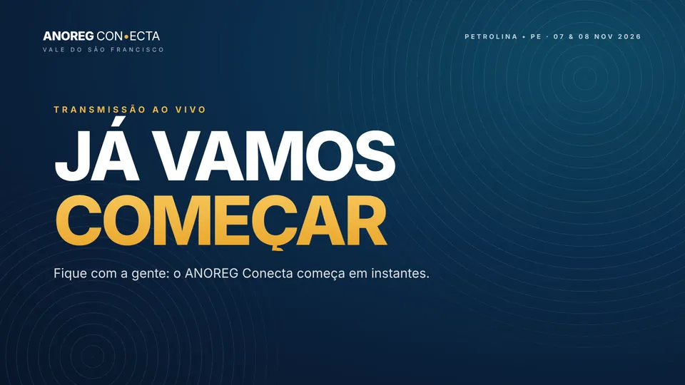
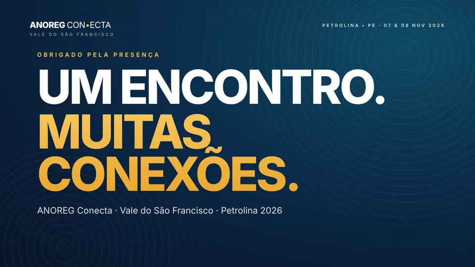
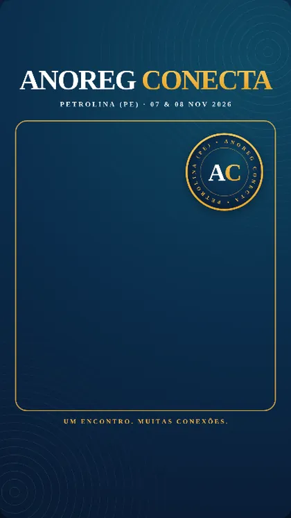
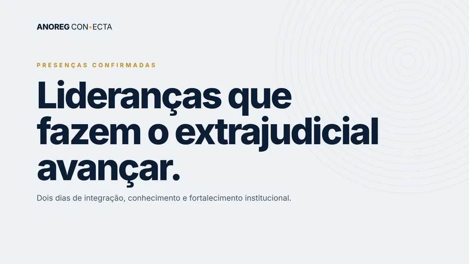

<title>PratFlix para Cartórios</title>
<meta name="claude:viewport-fit-sides" content="cover">
<meta name="description" content="Posts, vídeos, sites e treinamentos para cartórios e para o setor extrajudicial. Contrate uma entrega pontual ou conte com a equipe todos os meses.">
<link rel="preconnect" href="https://fonts.googleapis.com">
<link rel="preconnect" href="https://fonts.gstatic.com" crossorigin>
<link rel="stylesheet" href="https://fonts.googleapis.com/css2?family=Big+Shoulders+Display:wght@700;800;900&family=Poppins:wght@400;500;600;700&display=swap">
<style>
/* Layout: a página é um "catálogo" no espírito da PratFlix. Faixas grafite (a tela da plataforma) alternam com
   faixas marfim (o papel do balcão); trabalhos reais aparecem em fileiras como num catálogo de streaming;
   títulos em Big Shoulders caixa-alta, texto em Poppins; areia é o destaque, latão só em detalhes.
   Visual fixo (não segue tema claro/escuro): cada faixa define fundo e texto. */
:root {
  --grafite: #121212; --grafite-2: #1B1A17; --grafite-3: #26241F; --linha-esc: #34312A;
  --marfim: #F5F1E7; --papel: #ECE5D3; --linha-clara: #D9D0BA;
  --areia: #E3D6B4; --latao: #A88C4E; --latao-claro: #C9AE6E;
  --tinta: #1A1814; --tinta-suave: #5B5447; --claro: #F1ECDF; --claro-suave: #ABA392;
  --display: 'Big Shoulders Display', 'Arial Narrow', Impact, sans-serif;
  --texto: 'Poppins', system-ui, -apple-system, 'Segoe UI', sans-serif;
  --raio: 18px;
  --ruido: url("data:image/svg+xml,%3Csvg xmlns='http://www.w3.org/2000/svg' width='220' height='220'%3E%3Cfilter id='n'%3E%3CfeTurbulence type='fractalNoise' baseFrequency='.9' numOctaves='2' stitchTiles='stitch'/%3E%3CfeColorMatrix values='0 0 0 0 .5 0 0 0 0 .5 0 0 0 0 .5 0 0 0 .5 0'/%3E%3C/filter%3E%3Crect width='100%25' height='100%25' filter='url(%23n)'/%3E%3C/svg%3E");
  color-scheme: dark;
}
* { box-sizing: border-box }
html { scroll-behavior: smooth; scroll-padding-top: 84px }
body { margin: 0; background: var(--grafite); color: var(--claro); font-family: var(--texto); font-size: 16.5px; line-height: 1.6; -webkit-font-smoothing: antialiased; overflow-x: hidden }
body::before { content: ""; position: fixed; inset: 0 0 auto; height: env(safe-area-inset-top, 0px); z-index: 60; background: var(--grafite) }
img { max-width: 100%; height: auto; display: block }
a { color: inherit }
button, input, select, textarea { font: inherit; color: inherit }
:focus-visible { outline: 3px solid var(--areia); outline-offset: 3px; border-radius: 6px }
.claro :focus-visible { outline-color: var(--latao) }
.miolo { width: 100%; max-width: 1180px; margin: 0 auto; padding-left: max(16px, env(safe-area-inset-left, 0px)); padding-right: max(16px, env(safe-area-inset-right, 0px)) }
@media (min-width: 720px) { .miolo { padding-left: max(32px, env(safe-area-inset-left, 0px)); padding-right: max(32px, env(safe-area-inset-right, 0px)) } }

/* faixas */
.faixa { position: relative; padding-block: clamp(64px, 9vw, 120px) }
.escuro { background: var(--grafite); color: var(--claro) }
.escuro.alt { background: var(--grafite-2) }
.claro { background: var(--marfim); color: var(--tinta); color-scheme: light }
.claro.alt { background: var(--papel) }
.grao::after { content: ""; position: absolute; inset: 0; background-image: var(--ruido); opacity: .09; pointer-events: none; mix-blend-mode: overlay }
.claro.grao::after { opacity: .18; mix-blend-mode: multiply }

/* tipografia */
.rotulo { font-size: 12.5px; font-weight: 600; letter-spacing: .22em; text-transform: uppercase; color: var(--latao-claro); display: flex; align-items: center; gap: 10px }
.claro .rotulo { color: var(--latao) }
.rotulo::before { content: ""; width: 22px; height: 2px; background: currentColor }
h1, h2, h3 { margin: 0; font-family: var(--display); text-transform: uppercase; font-weight: 800; line-height: .92; letter-spacing: .005em; text-wrap: balance }
h1 { font-size: clamp(50px, 8.4vw, 112px); font-weight: 900 }
h2 { font-size: clamp(40px, 5.6vw, 76px); line-height: 1.02 }
.marca-texto { padding-block: .02em }
h3 { font-size: clamp(26px, 2.6vw, 34px); line-height: 1 }
.marca-texto { background: var(--areia); color: var(--grafite); padding: 0 .12em; box-decoration-break: clone; -webkit-box-decoration-break: clone }
.claro .marca-texto { background: var(--grafite); color: var(--areia) }
.lead { font-size: clamp(17px, 1.6vw, 19.5px); color: var(--claro-suave); max-width: 60ch; margin: 0 }
.claro .lead { color: var(--tinta-suave) }
p { margin: 0 }
.cab { display: grid; gap: 18px; margin-bottom: clamp(32px, 4vw, 52px); max-width: 860px }
.pequeno { font-size: 13.5px; color: var(--claro-suave) }
.claro .pequeno { color: var(--tinta-suave) }

/* botões */
.botoes { display: flex; flex-wrap: wrap; gap: 12px }
.btn { display: inline-flex; align-items: center; justify-content: center; gap: 10px; min-height: 52px; padding: 0 24px; border-radius: 999px; border: 1.5px solid transparent; font-weight: 600; font-size: 15.5px; text-decoration: none; cursor: pointer; transition: transform .18s ease, background .18s ease, border-color .18s ease }
.btn:hover { transform: translateY(-2px) }
.btn.cheio { background: var(--areia); color: var(--grafite) }
.btn.cheio:hover { background: #EFE5C9 }
.btn.linha { border-color: var(--linha-esc); color: var(--claro); background: transparent }
.btn.linha:hover { border-color: var(--areia) }
.claro .btn.cheio { background: var(--grafite); color: var(--areia) }
.claro .btn.linha { border-color: var(--linha-clara); color: var(--tinta) }
.claro .btn.linha:hover { border-color: var(--tinta) }
.btn .seta { transition: transform .18s ease }
.btn:hover .seta { transform: translateX(3px) }

/* topo */
.topo { position: sticky; top: env(safe-area-inset-top, 0px); z-index: 50; background: rgba(18,18,18,.86); backdrop-filter: blur(12px); -webkit-backdrop-filter: blur(12px); border-bottom: 1px solid rgba(255,255,255,.06) }
.topo .miolo { display: flex; align-items: center; justify-content: space-between; gap: 16px; min-height: 68px }
.logo { display: flex; align-items: baseline; gap: 10px; text-decoration: none; white-space: nowrap }
.logo b { font-weight: 700; font-size: 22px; letter-spacing: -.03em; color: #fff; display: inline-flex; align-items: center; gap: 3px }
.logo b i { width: 0; height: 0; border-left: 8px solid var(--areia); border-top: 5px solid transparent; border-bottom: 5px solid transparent; display: inline-block; transform: translateY(-1px) }
.logo span { font-size: 11px; letter-spacing: .24em; text-transform: uppercase; color: var(--claro-suave); font-weight: 500 }
.nav { display: none; gap: 26px; font-size: 14.5px }
.nav a { text-decoration: none; color: var(--claro-suave) }
.nav a:hover { color: #fff }
.topo .btn { min-height: 42px; padding: 0 18px; font-size: 14px }
@media (min-width: 1000px) { .nav { display: flex } }
@media (max-width: 420px) { .logo span { display: none } }

/* hero */
.hero { position: relative; overflow: hidden; padding-block: clamp(48px, 7vw, 96px) clamp(40px, 6vw, 80px) }
.hero .miolo { display: grid; gap: 48px; align-items: center }
@media (min-width: 960px) { .hero .miolo { grid-template-columns: 1.15fr .85fr } }
.hero-txt { display: grid; gap: 26px; position: relative; z-index: 2; min-width: 0 }
.hero h1 .l2 { color: var(--areia) }
.aneis { position: absolute; z-index: 0; pointer-events: none; border-radius: 50%; border: 1.5px solid rgba(227,214,180,.16); animation: respira 9s ease-in-out infinite }
.aneis::before, .aneis::after { content: ""; position: absolute; inset: 14%; border-radius: 50%; border: 1.5px solid rgba(227,214,180,.12) }
.aneis::after { inset: 30%; border-color: rgba(227,214,180,.09) }
@keyframes respira { 50% { transform: scale(1.05) rotate(4deg) } }
.luz { position: absolute; inset: 0; z-index: 0; pointer-events: none; background: radial-gradient(520px circle at var(--mx, 70%) var(--my, 30%), rgba(227,214,180,.10), transparent 60%) }
.selos { display: flex; flex-wrap: wrap; gap: 8px 18px; font-size: 13.5px; color: var(--claro-suave) }
.selos span { display: inline-flex; align-items: center; gap: 8px }
.selos span::before { content: ""; width: 6px; height: 6px; border-radius: 50%; background: var(--latao-claro) }

/* celular */
.palco { position: relative; display: grid; place-items: center; z-index: 2; padding-block: 12px }
.celular { position: relative; width: min(330px, 78vw); aspect-ratio: 9 / 18.5; border-radius: 44px; background: #0A0A0A; padding: 12px; box-shadow: 0 0 0 1.5px #3A372F, 0 40px 80px -30px rgba(0,0,0,.8), 0 0 120px -40px rgba(227,214,180,.25) }
.tela { position: relative; width: 100%; height: 100%; border-radius: 33px; overflow: hidden; background: #fff; color: #111; display: flex; flex-direction: column }
.tela-topo { display: flex; align-items: center; gap: 10px; padding: 34px 14px 10px; font-size: 12.5px; font-weight: 600; border-bottom: 1px solid #eee }
.avatar { width: 30px; height: 30px; border-radius: 50%; background: #1C1C1C; display: grid; place-items: center; color: #D9D9D9; font-family: Georgia, serif; font-size: 13px; flex: none }
.tela-topo small { display: block; font-weight: 400; color: #777; font-size: 11px }
.post { position: relative; aspect-ratio: 4 / 5; background: #ddd; overflow: hidden }
.mock { position: absolute; inset: 0; display: flex; flex-direction: column; justify-content: space-between; padding: 22px 20px; opacity: 0; transform: scale(1.04); transition: opacity .9s ease, transform 6s ease; overflow: hidden }
.mock.ativo { opacity: 1; transform: scale(1) }
.mock small { font-size: 10px; letter-spacing: .2em; text-transform: uppercase; font-weight: 600; opacity: .75 }
.mock strong { font-family: var(--display); text-transform: uppercase; font-weight: 800; font-size: 40px; line-height: .95 }
.mock span { font-size: 11px; opacity: .75 }
.mock::after { content: ""; position: absolute; right: -60px; top: -60px; width: 200px; height: 200px; border-radius: 50%; border: 1.5px solid currentColor; opacity: .15 }
.m-esc { background: var(--grafite); color: var(--claro) } .m-esc strong { color: var(--areia) }
.m-areia { background: var(--areia); color: var(--grafite) }
.m-papel { background: var(--marfim); color: var(--tinta) }
.tela-acoes { display: flex; gap: 14px; padding: 10px 14px 4px }
.tela-acoes svg { width: 22px; height: 22px }
.pontos { display: flex; gap: 5px; justify-content: center; margin-top: -2px }
.pontos button { width: 6px; height: 6px; border-radius: 50%; border: 0; padding: 0; background: #ccc; cursor: pointer }
.pontos button.ativo { background: #3897F0 }
.legenda { padding: 6px 14px 14px; font-size: 12px; line-height: 1.45; color: #333 }
.legenda b { font-weight: 600 }
.balao { position: absolute; z-index: 3; max-width: 230px; background: var(--grafite-3); border: 1px solid var(--linha-esc); border-radius: 16px; padding: 12px 14px; font-size: 13px; line-height: 1.4; box-shadow: 0 20px 40px -20px rgba(0,0,0,.7); animation: flutua 7s ease-in-out infinite }
.balao small { display: block; font-size: 10.5px; letter-spacing: .18em; text-transform: uppercase; color: var(--latao-claro); margin-bottom: 4px; font-weight: 600 }
.balao.b1 { left: -4%; top: 14% }
.balao.b2 { right: -6%; bottom: 16%; animation-delay: -3.5s; background: var(--areia); color: var(--grafite); border-color: transparent }
.balao.b2 small { color: #7A6638 }
@keyframes flutua { 50% { transform: translateY(-10px) } }
@media (max-width: 560px) { .balao { max-width: 180px; font-size: 12px } .balao.b1 { left: 0 } .balao.b2 { right: 0 } }
.pausa { position: absolute; z-index: 4; right: 10px; bottom: -6px; font-size: 12px; background: transparent; border: 1px solid var(--linha-esc); border-radius: 999px; padding: 6px 12px; color: var(--claro-suave); cursor: pointer }

/* letreiro de trabalhos */
.letreiro { position: relative; overflow: hidden; padding-block: 22px 34px; -webkit-mask: linear-gradient(90deg, transparent, #000 8%, #000 92%, transparent); mask: linear-gradient(90deg, transparent, #000 8%, #000 92%, transparent) }
.letreiro-trilho { display: flex; gap: 14px; width: max-content; animation: corre 80s linear infinite }
.letreiro:hover .letreiro-trilho { animation-play-state: paused }
.letreiro img { height: 168px; width: auto; border-radius: 10px; box-shadow: 0 10px 30px -14px rgba(0,0,0,.7) }
@keyframes corre { to { transform: translateX(-50%) } }

/* necessidade */
.tres { display: grid; gap: 14px }
@media (min-width: 860px) { .tres { grid-template-columns: repeat(3, 1fr) } }
.escolha { position: relative; text-align: left; display: grid; gap: 14px; align-content: start; padding: 26px; border-radius: var(--raio); border: 1.5px solid var(--linha-clara); background: #FBF8F1; cursor: pointer; transition: border-color .2s, transform .2s, box-shadow .2s; min-width: 0 }
.escolha:hover { border-color: var(--tinta); transform: translateY(-3px); box-shadow: 0 18px 40px -26px rgba(26,24,20,.5) }
.escolha .tag { font-size: 12px; font-weight: 600; letter-spacing: .14em; text-transform: uppercase; color: var(--latao) }
.escolha p { color: var(--tinta-suave); font-size: 15px }
.escolha .fala { font-family: var(--display); text-transform: uppercase; font-size: 30px; font-weight: 800; line-height: .98; color: var(--tinta) }
.escolha .ir { font-weight: 600; font-size: 14.5px; display: flex; gap: 8px; align-items: center; margin-top: 4px }
.escolha.destaque { background: var(--grafite); color: var(--claro); border-color: var(--grafite) }
.escolha.destaque .fala { color: var(--areia) }
.escolha.destaque p { color: var(--claro-suave) }
.escolha.destaque .tag { color: var(--latao-claro) }
.situacoes { margin-top: clamp(40px, 5vw, 64px); display: grid; gap: 22px }
@media (min-width: 960px) { .situacoes { grid-template-columns: 1fr 1fr; align-items: start } }
.chips { display: flex; flex-wrap: wrap; gap: 8px }
.chip { border: 1.5px solid var(--linha-clara); background: transparent; border-radius: 999px; padding: 10px 16px; font-size: 14px; cursor: pointer; text-align: left; transition: background .2s, border-color .2s, color .2s; min-height: 44px }
.chip:hover { border-color: var(--tinta) }
.chip[aria-pressed="true"] { background: var(--grafite); border-color: var(--grafite); color: var(--areia) }
.resposta { border-radius: var(--raio); background: var(--grafite); color: var(--claro); padding: 26px; display: grid; gap: 14px; min-height: 220px; align-content: start }
.resposta .citacao { font-size: 19px; font-weight: 500; line-height: 1.4; color: #fff }
.resposta .citacao::before { content: "“"; color: var(--areia) }
.resposta .citacao::after { content: "”"; color: var(--areia) }
.resposta ul { margin: 0; padding-left: 20px; color: var(--claro-suave); display: grid; gap: 4px }
.resposta .btn { justify-self: start; min-height: 46px }

/* caso ANOREG Conecta */
.caso { display: grid; gap: 36px }
@media (min-width: 960px) { .caso { grid-template-columns: .9fr 1.1fr; align-items: start } }
.caso-txt { display: grid; gap: 22px; min-width: 0 }
.entregas { list-style: none; margin: 0; padding: 0; display: grid; gap: 0; border-top: 1px solid var(--linha-esc) }
.entregas li { display: grid; grid-template-columns: 28px 1fr; gap: 10px; padding: 14px 0; border-bottom: 1px solid var(--linha-esc); font-size: 15.5px }
.entregas li::before { content: ""; width: 14px; height: 14px; margin-top: 5px; border: 2px solid var(--areia); border-radius: 50%; box-shadow: inset 0 0 0 3px var(--grafite), inset 0 0 0 10px var(--areia) }
.entregas b { color: #fff; font-weight: 600 }
.nota { font-size: 13.5px; color: var(--claro-suave); border-left: 2px solid var(--latao); padding-left: 14px }
.mosaico { display: grid; gap: 12px; grid-template-columns: repeat(6, 1fr); min-width: 0 }
.mosaico button { padding: 0; border: 0; background: none; cursor: zoom-in; border-radius: 12px; overflow: hidden; position: relative; display: block }
.mosaico img { width: 100%; height: 100%; object-fit: cover; transition: transform .5s ease }
.mosaico button:hover img { transform: scale(1.03) }
.mosaico .m1 { grid-column: 1 / -1 }
.mosaico .m2, .mosaico .m3 { grid-column: span 3 }
.mosaico .m4 { grid-column: span 2 }
.mosaico .m5 { grid-column: span 4 }
.mosaico .m5 img { aspect-ratio: 16 / 9.6 }
.mosaico .m4 img { aspect-ratio: 9 / 14.4; object-position: top }
.mosaico figcaption { position: absolute; left: 10px; bottom: 10px; font-size: 11.5px; font-weight: 600; letter-spacing: .06em; background: rgba(10,10,10,.75); color: #fff; padding: 4px 10px; border-radius: 999px }

/* catálogo */
.filtros { display: flex; flex-wrap: wrap; gap: 8px; margin-bottom: 28px }
.filtros button { border: 1.5px solid var(--linha-esc); background: transparent; color: var(--claro-suave); border-radius: 999px; padding: 9px 16px; font-size: 14px; cursor: pointer; min-height: 42px }
.filtros button[aria-pressed="true"] { background: var(--areia); color: var(--grafite); border-color: var(--areia) }
.catalogo { display: grid; gap: 44px }
.fileira { display: grid; gap: 16px }
.fileira[hidden] { display: none }
.fileira-cab { display: flex; flex-wrap: wrap; justify-content: space-between; align-items: end; gap: 10px 20px }
.fileira-cab h3 { color: #fff }
.fileira-cab p { color: var(--claro-suave); font-size: 15px; max-width: 62ch }
.selo { display: inline-block; font-size: 11px; font-weight: 600; letter-spacing: .16em; text-transform: uppercase; padding: 5px 10px; border-radius: 999px; border: 1px solid var(--linha-esc); color: var(--latao-claro); white-space: nowrap }
.trilho { display: flex; gap: 14px; overflow-x: auto; scroll-snap-type: x mandatory; padding-bottom: 10px; scrollbar-width: thin; scrollbar-color: var(--linha-esc) transparent }
.trilho button { flex: none; scroll-snap-align: start; padding: 0; border: 0; background: none; cursor: zoom-in; border-radius: 12px; overflow: hidden; position: relative }
.trilho img { height: 260px; width: auto; transition: transform .45s ease }
.trilho button:hover img { transform: scale(1.03) }
@media (max-width: 600px) { .trilho img { height: 210px } }
.entregou { display: flex; flex-wrap: wrap; gap: 6px }
.entregou span { font-size: 12.5px; color: var(--claro); background: var(--grafite-3); border-radius: 6px; padding: 4px 10px }

/* lightbox */
dialog.lupa { border: 0; padding: 0; background: transparent; max-width: min(1100px, 94vw); max-height: 92vh; color: var(--claro) }
dialog.lupa::backdrop { background: rgba(8,8,8,.88); backdrop-filter: blur(4px) }
.lupa-corpo { display: grid; gap: 12px; justify-items: center }
.lupa img { max-height: 80vh; width: auto; border-radius: 12px }
.lupa p { font-size: 14px; color: var(--claro-suave); text-align: center }
.lupa-fechar { position: fixed; top: calc(14px + env(safe-area-inset-top, 0px)); right: max(14px, env(safe-area-inset-right, 0px)); min-height: 44px; border-radius: 999px; border: 1px solid #555; background: #111; color: #fff; padding: 0 18px; cursor: pointer }

/* serviços */
.servicos { display: grid; gap: 14px }
@media (min-width: 720px) { .servicos { grid-template-columns: 1fr 1fr } }
@media (min-width: 1080px) { .servicos { grid-template-columns: repeat(3, 1fr) } }
.servico { display: grid; gap: 12px; align-content: start; padding: 26px; border-radius: var(--raio); background: #FBF8F1; border: 1px solid var(--linha-clara); min-width: 0 }
.servico.principal { background: var(--grafite); color: var(--claro); border-color: var(--grafite) }
.servico.principal p, .servico.principal li { color: var(--claro-suave) }
.servico .tag { font-size: 11.5px; font-weight: 600; letter-spacing: .16em; text-transform: uppercase; color: var(--latao) }
.servico.principal .tag { color: var(--latao-claro) }
.servico p { color: var(--tinta-suave); font-size: 15px }
.servico ul { margin: 0; padding: 0; list-style: none; display: flex; flex-wrap: wrap; gap: 6px }
.servico li { font-size: 13px; padding: 4px 10px; border-radius: 6px; background: var(--papel); color: var(--tinta-suave) }
.servico.principal li { background: var(--grafite-3) }
.servico .obs { font-size: 13px; border-top: 1px dashed var(--linha-clara); padding-top: 12px }
.servico.principal .obs { border-color: var(--linha-esc) }

/* atribuições */
.abas { display: flex; gap: 6px; overflow-x: auto; padding-bottom: 6px; margin-bottom: 26px; scrollbar-width: none }
.abas button { flex: none; border: 1.5px solid var(--linha-clara); background: transparent; border-radius: 999px; padding: 10px 18px; font-size: 14.5px; cursor: pointer; min-height: 44px; white-space: nowrap }
.abas button[aria-selected="true"] { background: var(--grafite); color: var(--areia); border-color: var(--grafite) }
.painel-atr { display: grid; gap: 28px }
@media (min-width: 960px) { .painel-atr { grid-template-columns: .85fr 1.15fr; align-items: start } }
.linhas { display: grid; gap: 14px }
.linhas h3 { color: var(--tinta) }
.linhas ul { margin: 0; padding: 0; list-style: none; display: grid; border-top: 1px solid var(--linha-clara) }
.linhas li { padding: 12px 0; border-bottom: 1px solid var(--linha-clara); font-size: 15.5px }
.pautas { display: grid; gap: 12px; grid-template-columns: repeat(auto-fit, minmax(190px, 1fr)) }
.pauta { aspect-ratio: 4 / 5; border-radius: 14px; padding: 18px; display: flex; flex-direction: column; justify-content: space-between; position: relative; overflow: hidden; background: var(--grafite); color: var(--claro) }
.pauta:nth-child(2) { background: var(--areia); color: var(--grafite) }
.pauta:nth-child(3) { background: #FBF8F1; color: var(--tinta); border: 1px solid var(--linha-clara) }
.pauta small { font-size: 10.5px; letter-spacing: .18em; text-transform: uppercase; font-weight: 600; opacity: .75 }
.pauta strong { font-family: var(--display); text-transform: uppercase; font-size: 30px; line-height: .95; font-weight: 800 }
.pauta span { font-size: 12px; opacity: .8; display: flex; justify-content: space-between }
.pauta::after { content: ""; position: absolute; right: -40px; top: -40px; width: 140px; height: 140px; border-radius: 50%; border: 1.5px solid currentColor; opacity: .14 }
.aviso-tec { font-size: 13.5px; color: var(--tinta-suave); margin-top: 18px }

/* planos */
.alterna { display: inline-flex; flex-wrap: wrap; gap: 4px; padding: 4px; border-radius: 999px; background: var(--grafite-3); margin-bottom: 28px }
.alterna button { border: 0; background: transparent; color: var(--claro-suave); border-radius: 999px; padding: 10px 18px; cursor: pointer; font-size: 14.5px; font-weight: 500; min-height: 44px }
.alterna button[aria-selected="true"] { background: var(--areia); color: var(--grafite) }
.planos { display: grid; gap: 14px }
@media (min-width: 860px) { .planos { grid-template-columns: repeat(3, 1fr) } }
.plano { display: grid; gap: 16px; align-content: start; padding: 28px; border-radius: var(--raio); background: var(--grafite-2); border: 1px solid var(--linha-esc); position: relative; min-width: 0 }
.plano.meio { background: var(--areia); color: var(--grafite); border-color: var(--areia) }
.plano .nome { font-family: var(--display); text-transform: uppercase; font-size: 34px; font-weight: 800; line-height: 1 }
.plano .para { font-size: 14.5px; color: var(--claro-suave) }
.plano.meio .para { color: #5A5040 }
.plano .valor { display: flex; align-items: baseline; gap: 6px; font-variant-numeric: tabular-nums }
.plano .valor b { font-size: 34px; font-weight: 700; letter-spacing: -.02em }
.plano .valor small { font-size: 14px; opacity: .75 }
.plano .ref { font-size: 11px; letter-spacing: .14em; text-transform: uppercase; font-weight: 600; color: var(--latao-claro) }
.plano.meio .ref { color: #7A6638 }
.plano ul { margin: 0; padding: 0; list-style: none; display: grid; gap: 8px; font-size: 14.5px }
.plano li { display: grid; grid-template-columns: 18px 1fr; gap: 8px }
.plano li::before { content: "✓"; font-weight: 700; color: var(--areia) }
.plano.meio li::before { color: var(--grafite) }
.plano .btn { width: 100%; min-height: 48px }
.plano.meio .btn.cheio { background: var(--grafite); color: var(--areia) }
.plano.meio .btn.cheio:hover { background: #000 }
.rodape-planos { margin-top: 22px; display: grid; gap: 10px; font-size: 14px; color: var(--claro-suave); max-width: 80ch }

/* calendário */
.mes { display: grid; gap: 12px }
@media (min-width: 900px) { .mes { grid-template-columns: repeat(4, 1fr) } }
.semana { border-radius: var(--raio); background: #FBF8F1; border: 1px solid var(--linha-clara); padding: 18px; display: grid; gap: 10px; align-content: start }
.semana h3 { font-size: 24px; color: var(--tinta) }
.item-cal { display: grid; gap: 2px; padding: 10px 12px; border-radius: 10px; background: var(--papel); font-size: 14px; line-height: 1.35; cursor: default; transition: transform .2s }
.item-cal:hover { transform: translateX(3px) }
.item-cal small { font-size: 10.5px; letter-spacing: .16em; text-transform: uppercase; font-weight: 600; color: var(--latao) }
.item-cal.video { background: var(--grafite); color: var(--claro) }
.item-cal.video small { color: var(--latao-claro) }

/* montador */
.montador { display: grid; gap: 22px }
@media (min-width: 1000px) { .montador { grid-template-columns: 1.35fr .65fr; align-items: start } }
.etapa-caixa { border-radius: 22px; background: #FBF8F1; border: 1px solid var(--linha-clara); padding: clamp(20px, 3vw, 34px); min-width: 0 }
.progresso { display: flex; gap: 5px; margin-bottom: 22px }
.progresso span { flex: 1; height: 4px; border-radius: 4px; background: var(--linha-clara); transition: background .3s }
.progresso span.feito { background: var(--grafite) }
.etapa { display: grid; gap: 18px }
.etapa[hidden] { display: none }
.etapa legend, .etapa .pergunta { font-family: var(--display); text-transform: uppercase; font-weight: 800; font-size: clamp(28px, 3.2vw, 40px); line-height: .98; padding: 0; color: var(--tinta) }
.etapa fieldset { border: 0; margin: 0; padding: 0; display: grid; gap: 16px; min-width: 0 }
.etapa .ajuda { font-size: 14.5px; color: var(--tinta-suave); margin-top: -6px }
.opcoes { display: grid; gap: 10px; grid-template-columns: repeat(auto-fit, minmax(200px, 1fr)) }
.opcao { position: relative; display: block; cursor: pointer }
.opcao input { position: absolute; opacity: 0; pointer-events: none }
.opcao span { display: grid; gap: 2px; padding: 14px 16px; border-radius: 14px; border: 1.5px solid var(--linha-clara); background: #fff; min-height: 56px; transition: border-color .15s, background .15s; font-size: 15px; font-weight: 500 }
.opcao span small { font-weight: 400; color: var(--tinta-suave); font-size: 13px }
.opcao:hover span { border-color: var(--tinta-suave) }
.opcao input:checked + span { border-color: var(--grafite); background: var(--grafite); color: var(--areia) }
.opcao input:checked + span small { color: var(--claro-suave) }
.opcao input:focus-visible + span { outline: 3px solid var(--latao); outline-offset: 2px }
.campos { display: grid; gap: 14px; grid-template-columns: repeat(auto-fit, minmax(220px, 1fr)) }
.campo { display: grid; gap: 6px; font-size: 14px; font-weight: 500 }
.campo input, .campo select, .campo textarea { width: 100%; min-height: 50px; border-radius: 12px; border: 1.5px solid var(--linha-clara); background: #fff; padding: 12px 14px; font-size: 16px; color: var(--tinta) }
.campo textarea { min-height: 96px; resize: vertical }
.campo input:focus, .campo select:focus, .campo textarea:focus { outline: none; border-color: var(--grafite) }
.sub { display: grid; gap: 10px; padding: 16px; border-radius: 14px; background: var(--papel) }
.sub h4 { margin: 0; font-size: 15px; font-weight: 600 }
.erro { color: #9A2A1C; font-size: 14px; font-weight: 500 }
.navegar { display: flex; justify-content: space-between; gap: 10px; margin-top: 24px; flex-wrap: wrap }
.navegar .btn { min-height: 50px }
.resumo { border-radius: 22px; background: var(--grafite); color: var(--claro); padding: 26px; display: grid; gap: 16px; position: sticky; top: calc(84px + env(safe-area-inset-top, 0px)); min-width: 0 }
.resumo h3 { color: var(--areia); font-size: 30px }
.resumo dl { margin: 0; display: grid; gap: 10px }
.resumo dt { font-size: 11px; letter-spacing: .16em; text-transform: uppercase; color: var(--latao-claro); font-weight: 600 }
.resumo dd { margin: 0; font-size: 14.5px; color: var(--claro); overflow-wrap: anywhere }
.resumo dd.vazio { color: #6F6A5F }
.estimativa { border-top: 1px solid var(--linha-esc); padding-top: 14px; display: grid; gap: 6px; font-size: 14px }
.estimativa b { font-size: 22px; font-variant-numeric: tabular-nums; color: #fff }
.estimativa .pequeno { font-size: 12.5px }
.envio { display: grid; gap: 14px }
.envio pre { white-space: pre-wrap; overflow-wrap: anywhere; font-family: var(--texto); font-size: 13.5px; background: #fff; border: 1px solid var(--linha-clara); border-radius: 12px; padding: 16px; margin: 0; max-height: 280px; overflow: auto; color: var(--tinta) }
.estado { font-size: 14px; font-weight: 500; padding: 12px 14px; border-radius: 12px; background: var(--papel) }

/* processo */
.passos { list-style: none; margin: 0; padding: 0; display: grid; gap: 0; counter-reset: p }
@media (min-width: 900px) { .passos { grid-template-columns: repeat(6, 1fr) } }
.passos li { counter-increment: p; position: relative; padding: 22px 18px 22px 0; display: grid; gap: 8px; align-content: start; border-top: 1.5px solid var(--linha-esc) }
@media (max-width: 899px) { .passos li { grid-template-columns: 54px 1fr; padding: 18px 0 } .passos li > * { grid-column: 2 } .passos li::before { grid-row: 1 / span 2; grid-column: 1 } }
.passos li::before { content: counter(p, decimal-leading-zero); font-family: var(--display); font-size: 40px; font-weight: 800; color: var(--areia); line-height: 1 }
.passos li.cartorio::before { color: #fff }
.passos b { font-size: 16px; color: #fff; font-weight: 600 }
.passos span { font-size: 14px; color: var(--claro-suave) }
.passos li::after { content: ""; position: absolute; left: 0; top: -1.5px; height: 1.5px; width: 0; background: var(--areia); transition: width .6s ease }
.passos:hover li::after { width: 100% }

/* equipe */
.equipe { display: grid; gap: 14px }
@media (min-width: 900px) { .equipe { grid-template-columns: 1.4fr 1fr 1fr } }
.pessoa { border-radius: var(--raio); background: #FBF8F1; border: 1px solid var(--linha-clara); padding: 26px; display: grid; gap: 14px; align-content: start; min-width: 0 }
.pessoa.lider { background: var(--grafite); color: var(--claro); border-color: var(--grafite) }
.mono { width: 76px; height: 76px; border-radius: 50%; display: grid; place-items: center; font-family: var(--display); font-weight: 800; font-size: 36px; background: var(--areia); color: var(--grafite); position: relative }
.mono::after { content: ""; position: absolute; inset: -6px; border-radius: 50%; border: 1.5px solid var(--latao); opacity: .5 }
.pessoa.lider .mono { width: 92px; height: 92px; font-size: 44px }
.pessoa h3 { font-size: 30px }
.pessoa .funcao { font-size: 12px; letter-spacing: .16em; text-transform: uppercase; font-weight: 600; color: var(--latao) }
.pessoa.lider .funcao { color: var(--latao-claro) }
.pessoa p { font-size: 15px; color: var(--tinta-suave) }
.pessoa.lider p { color: var(--claro-suave) }
.citacao-grande { font-family: var(--display); text-transform: uppercase; font-weight: 800; font-size: clamp(30px, 3.6vw, 48px); line-height: 1.08; max-width: 22ch; margin-bottom: 36px }

/* cursos */
.cursos { display: grid; gap: 22px }
@media (min-width: 1000px) { .cursos { grid-template-columns: 1fr 1fr; align-items: start } }
.modulos { list-style: none; margin: 0; padding: 0; display: grid; gap: 8px; counter-reset: m }
.modulos li { counter-increment: m; display: grid; grid-template-columns: 44px 1fr; gap: 6px 12px; padding: 14px 16px; border-radius: 14px; background: var(--grafite-3) }
.modulos li::before { content: counter(m); grid-row: 1 / span 2; font-family: var(--display); font-weight: 800; font-size: 34px; color: var(--areia); line-height: 1 }
.modulos b { font-weight: 600; color: #fff; font-size: 15px }
.modulos span { font-size: 13.5px; color: var(--claro-suave) }
.cartao-escuro { border-radius: 22px; background: var(--grafite-2); border: 1px solid var(--linha-esc); padding: clamp(20px, 3vw, 32px); display: grid; gap: 18px; min-width: 0 }
.diag-q { display: grid; gap: 10px }
.diag-q p { font-size: 15.5px; color: #fff; font-weight: 500 }
.diag-r { display: flex; flex-wrap: wrap; gap: 8px }
.diag-r button { border: 1.5px solid var(--linha-esc); background: transparent; color: var(--claro-suave); border-radius: 999px; padding: 8px 16px; cursor: pointer; font-size: 14px; min-height: 42px }
.diag-r button[aria-pressed="true"] { background: var(--areia); color: var(--grafite); border-color: var(--areia) }
.medidor { height: 8px; border-radius: 8px; background: var(--grafite-3); overflow: hidden }
.medidor i { display: block; height: 100%; width: 0; background: var(--areia); transition: width .4s ease }
.prioridades { display: grid; gap: 8px; padding: 16px; border-radius: 14px; background: var(--grafite-3); font-size: 14.5px }
.prioridades ol { margin: 0; padding-left: 20px; display: grid; gap: 6px; color: var(--claro) }

/* faq */
.faq { display: grid; gap: 0; border-top: 1px solid var(--linha-clara); max-width: 900px }
.faq details { border-bottom: 1px solid var(--linha-clara) }
.faq summary { cursor: pointer; list-style: none; display: flex; justify-content: space-between; gap: 18px; align-items: center; padding: 20px 0; font-weight: 600; font-size: 17px; min-height: 60px }
.faq summary::-webkit-details-marker { display: none }
.faq summary::after { content: "+"; font-family: var(--display); font-size: 30px; font-weight: 700; color: var(--latao); transition: transform .25s; flex: none; line-height: 1 }
.faq details[open] summary::after { transform: rotate(45deg) }
.faq details p { padding: 0 0 22px; color: var(--tinta-suave); max-width: 70ch }

/* final */
.final { text-align: left; display: grid; gap: 26px; justify-items: start }
.final h2 { font-size: clamp(46px, 7vw, 100px) }
.contatos { display: flex; flex-wrap: wrap; gap: 10px 26px; font-size: 15px; color: var(--claro-suave) }
.contatos a { color: var(--claro); text-decoration-color: var(--latao) }
footer { background: #0B0B0B; color: #8B8475; font-size: 13px; padding-block: 28px calc(28px + env(safe-area-inset-bottom, 0px)) }
footer .miolo { display: flex; flex-wrap: wrap; justify-content: space-between; gap: 12px }

@media (prefers-reduced-motion: reduce) {
  *, *::before, *::after { animation: none !important; transition: none !important; scroll-behavior: auto !important }
  .post img { transform: none }
}
</style>

<header class="topo">
  <div class="miolo">
    <a class="logo" href="#inicio" aria-label="PratFlix para Cartórios, início"><b>pratflix<i></i></b><span>para cartórios</span></a>
    <nav class="nav" aria-label="Seções">
      <a href="#trabalhos">Trabalhos</a><a href="#servicos">Serviços</a><a href="#planos">Planos</a><a href="#equipe">Equipe</a><a href="#duvidas">Dúvidas</a>
    </nav>
    <a class="btn cheio" href="#montador">Montar meu pacote</a>
  </div>
</header>

<main id="inicio">
<!-- 1. Chamada principal -->
<section class="hero escuro grao" id="hero">
  <div class="luz" aria-hidden="true"></div>
  <div class="aneis" aria-hidden="true" style="width:760px;height:760px;right:-260px;top:-180px"></div>
  <div class="aneis" aria-hidden="true" style="width:420px;height:420px;left:-200px;bottom:-200px;animation-delay:-4s"></div>
  <div class="miolo">
    <div class="hero-txt">
      <span class="rotulo">Comunicação, conteúdo e capacitação para o setor extrajudicial</span>
      <h1>Seu cartório tem muito a explicar. <span class="l2">A gente ajuda a comunicar.</span></h1>
      <p class="lead">Posts, vídeos, sites e treinamentos adaptados à rotina da sua serventia. Contrate uma entrega pontual ou conte com nossa equipe todos os meses.</p>
      <div class="botoes">
        <a class="btn cheio" href="#montador">Montar meu pacote <span class="seta" aria-hidden="true">→</span></a>
        <a class="btn linha" href="#trabalhos">Ver nossos trabalhos</a>
      </div>
      <div class="selos"><span>Equipe de conteúdo, vídeo e educação</span><span>Vivência no dia a dia de um cartório</span><span>Tudo passa pela sua aprovação</span></div>
    </div>
    <div class="palco">
      <div class="balao b1"><small>Dúvida do balcão</small>Quais documentos eu preciso para casar?</div>
      <div class="celular" aria-label="Exemplos de pautas para o perfil de um cartório">
        <div class="tela">
          <div class="tela-topo"><div class="avatar" aria-hidden="true">C</div><div>seu cartório<small>Exemplos de pauta</small></div></div>
          <div class="post" id="post-celular">
            <div class="mock m-esc ativo" role="img" aria-label="Exemplo de post: O que trazer para casar?"><small>Antes de vir ao cartório</small><strong>O que trazer para casar?</strong><span>Carrossel · arraste →</span></div>
            <div class="mock m-areia" role="img" aria-label="Exemplo de post: Perdi minha certidão. E agora?"><small>Dúvida do balcão</small><strong>Perdi minha certidão. E agora?</strong><span>Vídeo curto</span></div>
            <div class="mock m-papel" role="img" aria-label="Exemplo de post: Como falar com o cartório com segurança"><small>Canais oficiais</small><strong>Como falar com o cartório com segurança</strong><span>Card fixado</span></div>
            <div class="mock m-esc" role="img" aria-label="Exemplo de post: Horários, endereço e acessibilidade"><small>Organize sua visita</small><strong>Horários, endereço e acessibilidade</strong><span>Post informativo</span></div>
            <div class="mock m-areia" role="img" aria-label="Exemplo de post: O que observar na sua certidão"><small>Entenda o documento</small><strong>O que observar na sua certidão</strong><span>Carrossel · arraste →</span></div>
          </div>
          <div class="tela-acoes" aria-hidden="true">
            <svg viewBox="0 0 24 24" fill="none" stroke="#111" stroke-width="1.8"><path d="M12 20s-7-4.4-7-10a4 4 0 0 1 7-2.6A4 4 0 0 1 19 10c0 5.6-7 10-7 10z"/></svg>
            <svg viewBox="0 0 24 24" fill="none" stroke="#111" stroke-width="1.8"><path d="M20 12a8 8 0 1 1-3.2-6.4L20 4l-.6 4"/></svg>
            <svg viewBox="0 0 24 24" fill="none" stroke="#111" stroke-width="1.8"><path d="M21 3 10 14M21 3l-7 18-4-7-7-4z"/></svg>
          </div>
          <div class="pontos" id="pontos"></div>
          <p class="legenda"><b>cartório</b> Pautas que respondem antes de a dúvida chegar ao balcão. Exemplos ilustrativos.</p>
        </div>
      </div>
      <div class="balao b2"><small>Resposta</small>Está no post fixado, com a lista completa.</div>
      <button class="pausa" type="button" id="pausa" aria-pressed="false">Pausar</button>
    </div>
  </div>
</section>

<div class="escuro" aria-label="Alguns trabalhos já feitos">
  <div class="letreiro" id="letreiro"><div class="letreiro-trilho" id="letreiro-trilho"></div></div>
</div>

<!-- 2. Escolha da necessidade -->
<section class="faixa claro grao" id="necessidade">
  <div class="miolo">
    <div class="cab">
      <span class="rotulo">Por onde começar</span>
      <h2>Escolha o que você precisa. <span class="marca-texto">Nós organizamos a produção.</span></h2>
    </div>
    <div class="tres">
      <button class="escolha" type="button" data-preset="pontual">
        <span class="tag">Entrega pontual</span>
        <span class="fala">Preciso de uma arte, um vídeo, uma página ou uma cobertura.</span>
        <p>Você pede, a gente entrega. Bom para avisos, campanhas, eventos e o vídeo de apresentação do cartório.</p>
        <span class="ir">Montar entrega pontual <span aria-hidden="true">→</span></span>
      </button>
      <button class="escolha destaque" type="button" data-preset="mensal">
        <span class="tag">Acompanhamento mensal</span>
        <span class="fala">Quero uma equipe cuidando da comunicação com frequência.</span>
        <p>Calendário, textos, design e roteiros todo mês, com aprovação da serventia antes de qualquer publicação.</p>
        <span class="ir">Ver acompanhamento mensal <span aria-hidden="true">→</span></span>
      </button>
      <button class="escolha" type="button" data-preset="capacitacao">
        <span class="tag">Capacitação e cursos</span>
        <span class="fala">Quero preparar minha equipe ou produzir um curso próprio.</span>
        <p>Oficinas para a equipe ou para associações, e produção completa de cursos de profissionais do setor.</p>
        <span class="ir">Falar sobre capacitação <span aria-hidden="true">→</span></span>
      </button>
    </div>

    <div class="situacoes">
      <div style="display:grid;gap:16px;min-width:0">
        <h3 style="color:var(--tinta)">Alguma dessas frases já foi dita no seu cartório?</h3>
        <p class="pequeno">Toque na que mais parece com a sua rotina.</p>
        <div class="chips" id="chips"></div>
      </div>
      <div class="resposta" id="resposta" aria-live="polite"></div>
    </div>
  </div>
</section>

<!-- 3. ANOREG Conecta -->
<section class="faixa escuro grao" id="trabalhos">
  <div class="miolo">
    <div class="cab">
      <span class="rotulo">Caso em destaque · novembro de 2026</span>
      <h2>Veja como nosso trabalho apareceu no <span style="color:var(--areia)">ANOREG Conecta</span></h2>
      <p class="lead">ANOREG Conecta Vale do São Francisco, em Petrolina (PE). Líbero apoiou Daniel e Séfora, que conduziram a produção e a comunicação do evento. Abaixo, as peças que fizemos dentro desse trabalho.</p>
    </div>
    <div class="caso">
      <div class="caso-txt">
        <ul class="entregas">
          <li><span><b>Telas da transmissão</b><br>Abertura, programação de cada dia, chamada de palestra, intervalo e encerramento, na identidade visual do evento.</span></li>
          <li><span><b>Tarjas de palestrante</b><br>Nome e cargo sobre a câmera, prontos para entrar ao vivo.</span></li>
          <li><span><b>Vinhetas e reels</b><br>Vídeos de transmissão e cortes para o Instagram a partir do vídeo de abertura.</span></li>
          <li><span><b>Posts de Instagram</b><br>Cards únicos e carrosséis com quadros do evento.</span></li>
          <li><span><b>Filtro de foto “Eu fui”</b><br>Página em que o participante envia a foto e baixa com a moldura do evento, para stories ou feed. Teve até versão com chapéu de couro de vaqueiro.</span></li>
        </ul>
        <p class="nota">A comunicação do evento foi um trabalho de equipe. Mostramos aqui só as peças que saíram da nossa produção.</p>
      </div>
      <div class="mosaico">
        <button class="m1" type="button" data-lupa="img/conecta-abertura.webp" data-desc="Tela de abertura da transmissão"><figcaption>Abertura da transmissão</figcaption></button>
        <button class="m2" type="button" data-lupa="img/conecta-em-instantes.webp" data-desc="Tela de espera antes de começar"><figcaption>Espera</figcaption></button>
        <button class="m3" type="button" data-lupa="img/conecta-encerramento.webp" data-desc="Tela de encerramento"><figcaption>Encerramento</figcaption></button>
        <button class="m4" type="button" data-lupa="img/conecta-filtro.webp" data-desc="Moldura do filtro de foto para stories"><figcaption>Filtro de foto</figcaption></button>
        <button class="m5" type="button" data-lupa="img/conecta-liderancas.webp" data-desc="Tela de lideranças presentes"><figcaption>Lideranças</figcaption></button>
      </div>
    </div>
  </div>
</section>

<!-- 3b. Catálogo -->
<section class="faixa escuro alt" id="catalogo" aria-labelledby="catalogo-t">
  <div class="miolo">
    <div class="cab">
      <span class="rotulo">Mais trabalhos</span>
      <h2 id="catalogo-t">Em cartaz: o que já saiu da nossa produção</h2>
      <p class="lead">Arraste cada fileira para o lado. Toque numa imagem para ver maior.</p>
    </div>
    <div class="filtros" id="filtros" role="group" aria-label="Filtrar trabalhos">
      <button type="button" data-f="todos" aria-pressed="true">Todos</button>
      <button type="button" data-f="cartorio" aria-pressed="false">Setor extrajudicial</button>
      <button type="button" data-f="educacao" aria-pressed="false">Educação e cursos</button>
      <button type="button" data-f="identidade" aria-pressed="false">Identidade visual</button>
    </div>
    <div class="catalogo" id="catalogo-lista"></div>
  </div>
</section>

<!-- 4. Serviços -->
<section class="faixa claro grao" id="servicos">
  <div class="miolo">
    <div class="cab">
      <span class="rotulo">Serviços</span>
      <h2>Do aviso no Instagram ao <span class="marca-texto">vídeo de apresentação</span> do cartório</h2>
      <p class="lead">Começamos por posts, vídeos e comunicação mensal. Os outros serviços também estão aqui, para quando fizerem sentido.</p>
    </div>
    <div class="servicos">
      <article class="servico principal">
        <span class="tag">Mais pedido</span><h3>Posts e materiais gráficos</h3>
        <p>Para explicar serviços, avisar mudanças e orientar o cidadão antes do atendimento.</p>
        <ul><li>Cards informativos</li><li>Carrosséis educativos</li><li>Avisos e horários</li><li>Comunicados</li><li>Stories</li><li>Capas de vídeo</li><li>Cartazes com QR code</li><li>Checklists de documentos</li><li>Guias em PDF</li><li>Telas da recepção</li></ul>
        <p class="obs">Duas formas: só o design, com o texto que o cartório envia; ou a produção completa, com pesquisa, redação e planejamento.</p>
      </article>
      <article class="servico principal">
        <span class="tag">Mais pedido</span><h3>Vídeos e audiovisual</h3>
        <p>Vídeos curtos que respondem a dúvidas do balcão e mostram quem atende.</p>
        <ul><li>Edição do que vocês gravam</li><li>Roteiros</li><li>Orientação para gravar no celular</li><li>Gravação no cartório</li><li>Gravação em estúdio</li><li>Apresentação da equipe</li><li>Perguntas e respostas</li><li>Entrevistas</li><li>Cobertura de eventos</li></ul>
        <p class="obs">Cada proposta diz a duração, a quantidade, o formato, quantas revisões e se há deslocamento.</p>
      </article>
      <article class="servico principal">
        <span class="tag">Mais pedido</span><h3>Comunicação mensal</h3>
        <p>Uma equipe acompanhando o cartório todos os meses, com calendário e aprovação.</p>
        <ul><li>Diagnóstico inicial</li><li>Linguagem e padrão visual</li><li>Calendário editorial</li><li>Redação e design</li><li>Roteiros</li><li>Fluxo de aprovação</li><li>Agendamento, se contratado</li><li>Relatório mensal</li></ul>
        <p class="obs">Atendimento por mensagens, respostas a comentários, gravações e anúncios só entram quando estão no plano.</p>
      </article>
      <article class="servico">
        <span class="tag">Sob proposta</span><h3>Sites e páginas</h3>
        <p>Site institucional, página de serviços, de campanha ou de evento.</p>
        <ul><li>Formulário de interesse</li><li>Dúvidas frequentes</li><li>Horários e localização</li><li>Contatos oficiais</li><li>Área de orientações</li></ul>
        <p class="obs">A página orienta e leva aos canais oficiais. Não simula a prática de atos nem se liga a sistemas oficiais.</p>
      </article>
      <article class="servico">
        <span class="tag">Sob proposta</span><h3>Campanhas e anúncios</h3>
        <p>Planejamento, público, peças, página de destino quando contratada, acompanhamento e relatório.</p>
        <ul><li>Objetivo e público</li><li>Peças da campanha</li><li>Configuração dos anúncios</li><li>Relatório de resultados</li></ul>
        <p class="obs">O valor investido em mídia é separado dos honorários. Antes de começar, conferimos as regras aplicáveis à atividade e à localidade.</p>
      </article>
      <article class="servico">
        <span class="tag">Sob proposta</span><h3>Cursos e treinamentos</h3>
        <p>Oficinas para a equipe ou para associações, e produção de cursos de outros profissionais e instituições: estrutura, gravação e plataforma.</p>
        <ul><li>Oficinas personalizadas</li><li>Gravação de aulas</li><li>Organização do curso</li><li>Materiais de apoio</li></ul>
        <p class="obs">Também estamos preparando um curso próprio de comunicação para equipes de cartório.</p>
      </article>
    </div>
  </div>
</section>

<!-- 5. Exemplos por atribuição -->
<section class="faixa claro alt" id="atribuicoes">
  <div class="miolo">
    <div class="cab">
      <span class="rotulo">Exemplos por atribuição</span>
      <h2>Uma comunicação que ajuda <span class="marca-texto">antes mesmo do atendimento</span></h2>
      <p class="lead">Cada atribuição tem as suas dúvidas. Veja que tipo de conteúdo costuma ajudar em cada uma.</p>
    </div>
    <div class="abas" role="tablist" aria-label="Atribuições" id="abas"></div>
    <div class="painel-atr" role="tabpanel" id="painel-atr" aria-live="polite"></div>
    <p class="aviso-tec">São pautas de exemplo. O conteúdo técnico é escrito e revisado conforme as normas e os procedimentos atuais, e as informações de funcionamento passam pela aprovação da serventia.</p>
  </div>
</section>

<!-- 6. Planos -->
<section class="faixa escuro grao" id="planos">
  <div class="miolo">
    <div class="cab">
      <span class="rotulo">Planos</span>
      <h2>Poucos pacotes, <span style="color:var(--areia)">fáceis de comparar</span></h2>
      <p class="lead">Valores de referência para você ter uma ideia do investimento. A proposta confirma o escopo, o prazo e o valor para a sua serventia.</p>
    </div>
    <div class="alterna" role="tablist" aria-label="Tipo de plano" id="alterna">
      <button type="button" role="tab" aria-selected="true" data-p="mensal">Comunicação mensal</button>
      <button type="button" role="tab" aria-selected="false" data-p="posts">Posts</button>
      <button type="button" role="tab" aria-selected="false" data-p="videos">Vídeos</button>
    </div>
    <div class="planos" id="planos-lista"></div>
    <div class="rodape-planos" id="planos-nota"></div>
  </div>
</section>

<!-- 6b. Um mês de exemplo -->
<section class="faixa claro grao" id="mes">
  <div class="miolo">
    <div class="cab">
      <span class="rotulo">Como fica um mês</span>
      <h2>Oito posts e quatro vídeos, <span class="marca-texto">semana a semana</span></h2>
      <p class="lead">Um exemplo de calendário. Neste modelo, os quatro vídeos são somados aos oito posts. Cada contrato diz como os formatos se somam.</p>
    </div>
    <div class="mes" id="mes-lista"></div>
  </div>
</section>

<!-- 7. Montador de proposta -->
<section class="faixa claro alt" id="montador">
  <div class="miolo">
    <div class="cab">
      <span class="rotulo">Montador de proposta</span>
      <h2>O que seu cartório <span class="marca-texto">precisa hoje?</span></h2>
      <p class="lead">Oito passos rápidos. No fim, você revisa o resumo e envia o pedido. A proposta chega com escopo, prazo e valor.</p>
    </div>
    <div class="montador">
      <form class="etapa-caixa" id="form" novalidate>
        <div class="progresso" id="progresso" aria-hidden="true"></div>
        <p class="pequeno" id="passo-txt" style="margin-bottom:10px"></p>

        <div class="etapa" data-e="1">
          <p class="pergunta">Qual é a serventia?</p>
          <div class="campos">
            <label class="campo">Nome do cartório<input id="f-serventia" name="serventia" autocomplete="organization" placeholder="Ex.: Cartório do 1º Ofício"></label>
            <label class="campo">Cidade e estado<input id="f-cidade" name="cidade" placeholder="Ex.: Petrolina (PE)"></label>
          </div>
        </div>

        <div class="etapa" data-e="2" hidden>
          <fieldset><legend>Quais atribuições?</legend>
            <p class="ajuda">Marque todas que a serventia tem.</p>
            <div class="opcoes" id="op-atrib"></div>
          </fieldset>
        </div>

        <div class="etapa" data-e="3" hidden>
          <fieldset><legend>Qual é o objetivo principal?</legend>
            <div class="opcoes" id="op-objetivo"></div>
          </fieldset>
        </div>

        <div class="etapa" data-e="4" hidden>
          <fieldset><legend>Quais serviços interessam?</legend>
            <p class="ajuda">Pode marcar mais de um.</p>
            <div class="opcoes" id="op-servicos"></div>
          </fieldset>
        </div>

        <div class="etapa" data-e="5" hidden>
          <p class="pergunta">Quantidade e frequência</p>
          <div id="detalhes" style="display:grid;gap:14px"></div>
        </div>

        <div class="etapa" data-e="6" hidden>
          <fieldset><legend>Remoto ou presencial?</legend>
            <div class="opcoes" id="op-modo"></div>
          </fieldset>
        </div>

        <div class="etapa" data-e="7" hidden>
          <fieldset><legend>Para quando?</legend>
            <div class="opcoes" id="op-prazo"></div>
          </fieldset>
        </div>

        <div class="etapa" data-e="8" hidden>
          <p class="pergunta">Quem fala com a gente?</p>
          <div class="campos">
            <label class="campo">Seu nome<input id="f-nome" name="nome" autocomplete="name"></label>
            <label class="campo">Função no cartório<input id="f-funcao" name="funcao" placeholder="Ex.: titular, substituta, gestor"></label>
            <label class="campo">WhatsApp ou e-mail<input id="f-contato" name="contato" autocomplete="tel"></label>
          </div>
          <label class="campo">Quer contar mais alguma coisa? (opcional)<textarea id="f-obs" name="obs"></textarea></label>
        </div>

        <div class="etapa" data-e="9" hidden>
          <p class="pergunta">Revise e envie seu pedido</p>
          <div class="envio">
            <pre id="texto-pedido"></pre>
            <div class="botoes" id="botoes-envio"></div>
            <p class="estado" id="estado-envio" aria-live="polite">Seu pedido ainda não foi enviado.</p>
          </div>
        </div>

        <p class="erro" id="erro" aria-live="assertive" hidden></p>
        <div class="navegar">
          <button class="btn linha" type="button" id="voltar">← Voltar</button>
          <button class="btn cheio" type="submit" id="avancar">Continuar <span class="seta" aria-hidden="true">→</span></button>
        </div>
      </form>

      <aside class="resumo" aria-label="Resumo das escolhas">
        <h3>Seu pedido</h3>
        <dl id="resumo"></dl>
        <div class="estimativa" id="estimativa"></div>
      </aside>
    </div>
  </div>
</section>

<!-- 8. Como funciona -->
<section class="faixa escuro grao" id="processo">
  <div class="miolo">
    <div class="cab">
      <span class="rotulo">Como funciona</span>
      <h2>Nada é publicado sem passar <span style="color:var(--areia)">pelo cartório</span></h2>
    </div>
    <ol class="passos">
      <li><b>Briefing</b><span>Entendemos a serventia, o público e o que precisa mudar.</span></li>
      <li><b>Planejamento</b><span>Temas, formatos e calendário do período.</span></li>
      <li><b>Produção</b><span>Textos, artes, roteiros e vídeos.</span></li>
      <li><b>Revisão interna</b><span>Conferimos linguagem, informação e padrão visual.</span></li>
      <li class="cartorio"><b>Aprovação do cartório</b><span>A serventia aprova ou pede ajustes.</span></li>
      <li><b>Entrega ou publicação</b><span>Arquivos finais ou agendamento, conforme o plano.</span></li>
    </ol>
  </div>
</section>

<!-- 9. Equipe -->
<section class="faixa claro grao" id="equipe">
  <div class="miolo">
    <div class="cab">
      <span class="rotulo">Quem está por trás</span>
    </div>
    <p class="citacao-grande">Quem conhece a rotina <span class="marca-texto">ajuda a comunicar melhor.</span></p>
    <p class="lead" style="margin-bottom:36px">Reunimos experiência em conteúdo, educação e produção audiovisual com a vivência de quem acompanha de perto o universo extrajudicial.</p>
    <div class="equipe">
      <article class="pessoa lider">
        <div class="mono" aria-hidden="true">L</div>
        <span class="funcao">Conteúdo, educação e estratégia</span>
        <h3>Líbero Filho</h3>
        <p>Advogado, professor e produtor de conteúdo, com atuação em projetos de educação jurídica e plataformas digitais, entre elas a PratFlix. É titular do Cartório do Registro Civil de Curral Queimado (Petrolina, PE) e diretor da ANOREG.</p>
        <p class="pequeno" style="color:var(--claro-suave)">A PratFlix para Cartórios é um serviço independente. Não pertence à ANOREG nem tem chancela de qualquer entidade.</p>
      </article>
      <article class="pessoa">
        <div class="mono" aria-hidden="true">D</div>
        <span class="funcao">Produção e comunicação</span>
        <h3>Daniel</h3>
        <p>Atuou na produção e na comunicação do ANOREG Conecta Vale do São Francisco.</p>
      </article>
      <article class="pessoa">
        <div class="mono" aria-hidden="true">S</div>
        <span class="funcao">Produção e comunicação</span>
        <h3>Séfora</h3>
        <p>Atuou na produção e na comunicação do ANOREG Conecta Vale do São Francisco.</p>
      </article>
    </div>
  </div>
</section>

<!-- 10. Cursos e capacitação -->
<section class="faixa escuro alt grao" id="cursos">
  <div class="miolo">
    <div class="cab">
      <span class="rotulo">Cursos e capacitação</span>
      <h2>Seu conhecimento também <span style="color:var(--areia)">pode virar um curso</span></h2>
      <p class="lead">Oficinas para preparar a equipe, produção de cursos de profissionais do setor e um curso próprio de comunicação para cartórios, que está em preparação.</p>
    </div>
    <div class="cursos">
      <div class="cartao-escuro">
        <span class="selo">Em preparação</span>
        <h3 style="color:#fff">Comunicação na Prática para Cartórios</h3>
        <p class="pequeno">Aulas de 5 a 12 minutos, exemplos do setor, modelos editáveis, exercícios, checklist por módulo e um projeto final.</p>
        <ol class="modulos">
          <li><b>Diagnóstico</b><span>Público, canais e dificuldades · avaliação inicial</span></li>
          <li><b>Linguagem clara</b><span>Explicar serviços e revisar textos · reescrever uma orientação</span></li>
          <li><b>Planejamento</b><span>Pautas e frequência · calendário de 30 dias</span></li>
          <li><b>Design</b><span>Organização visual e legibilidade · produzir três posts</span></li>
          <li><b>Vídeos</b><span>Roteiro, enquadramento, áudio e gravação · gravar um vídeo</span></li>
          <li><b>Atendimento digital</b><span>Dúvidas e encaminhamentos · banco de respostas gerais</span></li>
          <li><b>Revisão e publicação</b><span>Conferência técnica, privacidade e imagens · checklist de aprovação</span></li>
          <li><b>Avaliação</b><span>Indicadores e ajustes · plano do próximo mês</span></li>
        </ol>
        <a class="btn linha" href="#montador" data-preset-link="curso">Quero saber quando abrir</a>
      </div>
      <div class="cartao-escuro" id="diagnostico">
        <span class="selo">Gratuito · 1 minuto</span>
        <h3 style="color:#fff">Como está a comunicação do seu cartório?</h3>
        <p class="pequeno">Responda com sinceridade. O resultado mostra por onde começar. É uma conversa inicial, não uma auditoria.</p>
        <div id="diag-perguntas" style="display:grid;gap:18px"></div>
        <div class="medidor" aria-hidden="true"><i id="diag-barra"></i></div>
        <div class="prioridades" id="diag-resultado" aria-live="polite"></div>
      </div>
    </div>
  </div>
</section>

<!-- 11. Perguntas frequentes -->
<section class="faixa claro grao" id="duvidas">
  <div class="miolo">
    <div class="cab">
      <span class="rotulo">Perguntas frequentes</span>
      <h2>Antes de pedir a proposta</h2>
    </div>
    <div class="faq" id="faq"></div>
  </div>
</section>

<!-- 12. Contato final -->
<section class="faixa escuro grao" id="contato" style="overflow:hidden">
  <div class="aneis" aria-hidden="true" style="width:620px;height:620px;right:-200px;bottom:-260px"></div>
  <div class="miolo final" style="position:relative;z-index:2">
    <span class="rotulo">Vamos conversar</span>
    <h2>Seu cartório tem muito a explicar. <span style="color:var(--areia)">Por onde começamos?</span></h2>
    <p class="lead">Monte o pedido em poucos passos ou fale direto com a gente. A proposta chega com escopo, prazo e valor.</p>
    <div class="botoes">
      <a class="btn cheio" href="#montador">Montar meu pacote <span class="seta" aria-hidden="true">→</span></a>
      <a class="btn linha" href="#trabalhos">Ver nossos trabalhos</a>
    </div>
    <div class="contatos" id="contatos"></div>
  </div>
</section>
</main>

<footer>
  <div class="miolo">
    <span>PratFlix para Cartórios · Comunicação, conteúdo e capacitação para o setor extrajudicial</span>
    <span>Serviço independente, sem vínculo oficial com associações ou órgãos do setor.</span>
  </div>
</footer>

<dialog class="lupa" id="lupa">
  <button class="lupa-fechar" type="button" id="lupa-fechar">Fechar ✕</button>
  <div class="lupa-corpo"><p id="lupa-desc"></p></div>
</dialog>

<script>
// Contatos comerciais. Com o WhatsApp preenchido (só números, com DDI e DDD, ex.: 5587999999999),
// o pedido do montador abre o WhatsApp já escrito. Sem ele, o visitante copia o resumo e envia pelo direct.
const CONTATO = { whatsapp: '', email: '', instagram: 'liberofilho' };

const $ = s => document.querySelector(s);
const el = (tag, attrs = {}, html = '') => { const e = document.createElement(tag); for (const [k, v] of Object.entries(attrs)) e.setAttribute(k, v); if (html) e.innerHTML = html; return e; };
const brl = n => n.toLocaleString('pt-BR', { style: 'currency', currency: 'BRL', maximumFractionDigits: 0 });
const calmo = matchMedia('(prefers-reduced-motion: reduce)').matches;

/* ---------- hero: luz que segue o cursor e celular com posts ---------- */
const hero = $('#hero');
hero.addEventListener('pointermove', e => { const r = hero.getBoundingClientRect(); hero.style.setProperty('--mx', (e.clientX - r.left) + 'px'); hero.style.setProperty('--my', (e.clientY - r.top) + 'px'); });
const fotos = [...document.querySelectorAll('#post-celular .mock')];
let atual = 0, timer = null, pausado = calmo;
const pontos = $('#pontos');
fotos.forEach((_, i) => { const b = el('button', { type: 'button', 'aria-label': `Post ${i + 1}` }); b.onclick = () => mostra(i); pontos.append(b); });
function mostra(i) { fotos[atual].classList.remove('ativo'); pontos.children[atual].classList.remove('ativo'); atual = (i + fotos.length) % fotos.length; fotos[atual].classList.add('ativo'); pontos.children[atual].classList.add('ativo'); }
mostra(0);
function roda() { clearInterval(timer); if (!pausado) timer = setInterval(() => mostra(atual + 1), 5200); }
$('#pausa').onclick = e => { pausado = !pausado; e.currentTarget.textContent = pausado ? 'Continuar' : 'Pausar'; e.currentTarget.setAttribute('aria-pressed', pausado); roda(); };
if (calmo) { $('#pausa').textContent = 'Continuar'; $('#pausa').setAttribute('aria-pressed', 'true'); }
roda();

/* ---------- letreiro de trabalhos ---------- */
const LETREIRO = ['conecta-abertura', 'renato-manual-1', 'prat-dash-1', 'anoregpe-1', 'eduarda-1', 'conecta-em-instantes', 'renato-carrossel-1', 'prat-carteira', 'mapa-mental', 'conecta-encerramento', 'eduarda-diva', 'renato-stories', 'prat-grupo', 'conecta-liderancas', 'pdf-teses', 'renato-thumb'];
const trilho = $('#letreiro-trilho');
[...LETREIRO, ...LETREIRO].forEach((n, i) => trilho.append(el('img', { src: `img/${n}.webp`, alt: '', loading: i < 8 ? 'eager' : 'lazy', 'aria-hidden': 'true' })));

/* ---------- situações ---------- */
const SITUACOES = [
  { f: 'Nosso Instagram fica semanas sem atualização.', o: ['Calendário mensal com temas definidos', 'Posts prontos para aprovar com antecedência', 'Agendamento, se contratado'], s: ['mensal'] },
  { f: 'Temos boas ideias, mas ninguém consegue produzir.', o: ['Vocês trazem a ideia, nós escrevemos e desenhamos', 'Roteiros para a equipe gravar'], s: ['posts', 'mensal'] },
  { f: 'O público chega sem entender os documentos necessários.', o: ['Checklist de documentos por serviço', 'Carrossel “Antes de vir ao cartório”', 'Cartaz com QR code na recepção'], s: ['posts'] },
  { f: 'As mesmas dúvidas aparecem todos os dias no WhatsApp.', o: ['Série “Dúvida do balcão” em vídeo curto', 'Guia em PDF para enviar no atendimento', 'Banco de respostas gerais para a equipe'], s: ['videos', 'posts'] },
  { f: 'Nosso cartório tem uma boa estrutura, mas isso não aparece na internet.', o: ['Vídeo de apresentação do cartório e da equipe', 'Fotos e bastidores sem expor documentos'], s: ['videos'] },
  { f: 'Queremos gravar vídeos, mas não sabemos como começar.', o: ['Roteiros curtos e orientação para gravar no celular', 'Edição do que vocês gravam', 'Ou gravação com a nossa equipe'], s: ['videos'] },
  { f: 'Precisamos divulgar uma ação e não temos equipe.', o: ['Peças da campanha e vídeo curto', 'Página da ação, se precisar', 'Cobertura no dia'], s: ['campanha', 'cobertura'] },
  { f: 'Cada funcionário faz uma arte diferente.', o: ['Padrão visual com modelos prontos', 'Regras simples de cor, fonte e linguagem'], s: ['posts', 'treinamento'] },
  { f: 'Queremos treinar a equipe para cuidar da comunicação.', o: ['Oficina para a equipe com exercícios práticos', 'Modelos editáveis e checklist de aprovação'], s: ['treinamento'] },
  { f: 'Tenho conhecimento para ensinar, mas não sei organizar um curso.', o: ['Estrutura de módulos e aulas', 'Gravação, edição e organização na plataforma'], s: ['curso'] },
];
const chips = $('#chips'), resp = $('#resposta');
SITUACOES.forEach((s, i) => { const b = el('button', { type: 'button', class: 'chip', 'aria-pressed': 'false' }, s.f); b.onclick = () => situacao(i); chips.append(b); });
function situacao(i) {
  [...chips.children].forEach((c, j) => c.setAttribute('aria-pressed', j === i));
  const s = SITUACOES[i];
  resp.innerHTML = `<p class="citacao">${s.f}</p><p class="pequeno" style="color:var(--latao-claro);letter-spacing:.14em;text-transform:uppercase;font-weight:600;font-size:12px">O que costuma ajudar</p><ul>${s.o.map(x => `<li>${x}</li>`).join('')}</ul>`;
  const b = el('a', { class: 'btn cheio', href: '#montador' }, 'Montar pacote com isso <span class="seta" aria-hidden="true">→</span>');
  b.onclick = () => preset({ servicos: s.s, nota: s.f });
  resp.append(b);
}
situacao(0);

/* ---------- catálogo ---------- */
const CATALOGO = [
  { cat: 'cartorio', t: 'Portal e área de membros · ANOREG/PE', selo: 'Projeto apresentado', d: 'Apresentação do projeto de portal público e área de membros: serviços ao cidadão, notícias com fonte oficial, normas e trilhas de capacitação.', e: ['Portal', 'Área de membros', 'Apresentação do projeto'],
    img: [['anoregpe-1', 'Capa da apresentação do portal'], ['anoregpe-2', 'O projeto'], ['anoregpe-4', 'Tela de notícias']] },
  { cat: 'educacao', t: 'PratFlix · a advocacia na prática', selo: 'Projeto próprio', d: 'Plataforma do Líbero para quem advoga: carrosséis com passo a passo, materiais em PDF, grupos e fundos para lives, tudo na mesma identidade.', e: ['Carrosséis', 'Materiais', 'Comunidade', 'Lives'],
    img: [['prat-dash-1', 'Carrossel: monte o dashboard do seu escritório com IA'], ['prat-dash-3', 'Carrossel: a planilha base'], ['prat-carteira', 'Material: carteirinha da OAB'], ['prat-grupo', 'Capa do grupo de aperfeiçoamento'], ['prat-fundo', 'Fundo para live']] },
  { cat: 'educacao identidade', t: 'Interpretação Bíblica · Pastor Renato Torres', selo: 'Curso', d: 'Do conhecimento do Pastor Renato a um curso completo: gravação, plataforma e lançamento, com identidade visual própria para posts, stories, aulas e e-mails.', e: ['Identidade visual', 'Gravação do curso', 'Plataforma', 'Lançamento', 'Miniaturas'],
    img: [['renato-manual-1', 'Manual da identidade Brasa'], ['renato-manual-2', 'Cores e tipografia'], ['renato-carrossel-1', 'Carrossel: ler x interpretar'], ['renato-carrossel-3', 'Carrossel: página interna'], ['renato-stories', 'Stories: inscrições abertas'], ['renato-thumb', 'Miniatura do YouTube']] },
  { cat: 'educacao', t: 'Educação jurídica e materiais', selo: 'Educação', d: 'Carrosséis didáticos da advogada e professora Eduarda Caraciolo, mapas mentais, PDFs e a plataforma Cartório com Líbero, de preparação para o ENAC.', e: ['Carrosséis', 'Mapas mentais', 'PDFs', 'Plataforma de estudos'],
    img: [['eduarda-1', 'Carrossel da Eduarda: por que escolher Civil'], ['eduarda-2', 'Carrossel da Eduarda: página interna'], ['eduarda-diva', 'Carrossel da Eduarda: divas escolhem Direito Civil'], ['mapa-mental', 'Mapa mental de remédios constitucionais'], ['pdf-teses', 'PDF: todas as teses já cobradas'], ['enac-banner', 'Banner do Cartório com Líbero']] },
];
const lista = $('#catalogo-lista');
CATALOGO.forEach(c => {
  const f = el('article', { class: 'fileira', 'data-cat': c.cat });
  f.innerHTML = `<div class="fileira-cab"><div style="display:grid;gap:8px;min-width:0"><h3>${c.t}</h3><p>${c.d}</p></div><span class="selo">${c.selo}</span></div><div class="entregou">${c.e.map(x => `<span>${x}</span>`).join('')}</div>`;
  const t = el('div', { class: 'trilho', tabindex: '0', 'aria-label': `Imagens: ${c.t}` });
  c.img.forEach(([n, a]) => { const b = el('button', { type: 'button', 'data-lupa': `img/${n}.webp`, 'data-desc': `${c.t} · ${a}` }); b.append(el('img', { src: `img/${n}.webp`, alt: a, loading: 'lazy' })); t.append(b); });
  f.append(t); lista.append(f);
});
$('#filtros').addEventListener('click', e => {
  const b = e.target.closest('button'); if (!b) return;
  [...$('#filtros').children].forEach(x => x.setAttribute('aria-pressed', x === b));
  document.querySelectorAll('.fileira').forEach(f => f.hidden = !(b.dataset.f === 'todos' || f.dataset.cat.split(' ').includes(b.dataset.f)));
});

/* ---------- lupa ---------- */
const lupa = $('#lupa');
document.addEventListener('click', e => {
  const b = e.target.closest('[data-lupa]'); if (!b) return;
  $('#lupa-img').src = b.dataset.lupa; $('#lupa-img').alt = b.dataset.desc; $('#lupa-desc').textContent = b.dataset.desc;
  lupa.showModal();
});
$('#lupa-fechar').onclick = () => lupa.close();
lupa.addEventListener('click', e => { if (e.target === lupa) lupa.close(); });

/* ---------- atribuições ---------- */
const ATRIB = [
  { n: 'Registro Civil', l: ['Certidões: como pedir e o que observar', 'Preparação para o atendimento', 'Casamento: habilitação, documentos e prazos', 'Dúvidas que chegam todo dia', 'Orientações ao cidadão'], p: [['Antes de vir ao cartório', 'O que trazer para casar?', 'Carrossel'], ['Dúvida do balcão', 'Perdi minha certidão. E agora?', 'Vídeo curto'], ['Entenda o documento', 'O que observar na sua certidão', 'Carrossel']] },
  { n: 'Tabelionato de Notas', l: ['Explicação de cada ato', 'Documentos por tipo de escritura', 'Etapas do atendimento', 'Serviços digitais'], p: [['Serviço explicado', 'Para que serve uma procuração?', 'Vídeo'], ['Por dentro do atendimento', 'O que acontece depois do pedido?', 'Vídeo'], ['Atendimento digital', 'O que dá para resolver online?', 'Tutorial']] },
  { n: 'Registro de Imóveis', l: ['O que é a matrícula', 'Documentação para registrar', 'Como acompanhar o pedido', 'Entender cada etapa'], p: [['Entenda o documento', 'Como ler a matrícula do imóvel', 'Carrossel'], ['Organize sua visita', 'Como acompanhar seu pedido', 'Post informativo'], ['Perguntas da semana', 'Comprei um imóvel. E agora?', 'Stories']] },
  { n: 'Protesto', l: ['Orientação ao usuário', 'Canais de atendimento', 'Explicação dos procedimentos'], p: [['Canais oficiais', 'Como falar com o cartório com segurança', 'Card fixado'], ['Serviço explicado', 'Recebi uma intimação. O que faço?', 'Vídeo'], ['Informação atualizada', 'Como reconhecer mensagens falsas', 'Card']] },
  { n: 'Títulos e Documentos / PJ', l: ['Finalidade de cada registro', 'Organização documental', 'Dúvidas frequentes'], p: [['Serviço explicado', 'Para que registrar um documento?', 'Vídeo'], ['Antes de vir ao cartório', 'Registrar uma associação: o que trazer', 'Carrossel'], ['Perguntas da semana', 'Dúvidas sobre pessoa jurídica', 'Stories']] },
  { n: 'Várias atribuições', l: ['Séries separadas por serviço', 'Identificação visual para cada série', 'Calendário que reveza os serviços'], p: [['Conheça nossa equipe', 'Quem acompanha cada etapa?', 'Foto e vídeo'], ['Organize sua visita', 'Horários, localização e acessibilidade', 'Post informativo'], ['Cartório na comunidade', 'Ações e encontros realizados', 'Cobertura']] },
];
const abas = $('#abas'), painel = $('#painel-atr');
ATRIB.forEach((a, i) => { const b = el('button', { type: 'button', role: 'tab', 'aria-selected': 'false', id: `aba-${i}`, 'aria-controls': 'painel-atr' }, a.n); b.onclick = () => atrib(i); abas.append(b); });
abas.addEventListener('keydown', e => { if (!['ArrowRight', 'ArrowLeft'].includes(e.key)) return; const bs = [...abas.children]; const i = bs.indexOf(document.activeElement); const j = (i + (e.key === 'ArrowRight' ? 1 : -1) + bs.length) % bs.length; bs[j].focus(); atrib(j); });
function atrib(i) {
  [...abas.children].forEach((b, j) => { b.setAttribute('aria-selected', i === j); b.tabIndex = i === j ? 0 : -1; });
  painel.setAttribute('aria-labelledby', `aba-${i}`);
  const a = ATRIB[i];
  painel.innerHTML = `<div class="linhas"><h3>${a.n}</h3><ul>${a.l.map(x => `<li>${x}</li>`).join('')}</ul></div><div class="pautas">${a.p.map(([s, t, f]) => `<div class="pauta"><small>${s}</small><strong>${t}</strong><span><em style="font-style:normal">${f}</em><em style="font-style:normal">→</em></span></div>`).join('')}</div>`;
}
atrib(0);

/* ---------- planos (valores de referência) ---------- */
const PLANOS = {
  mensal: { itens: [
    { nome: 'Essencial', para: 'Para manter o perfil ativo e organizado.', v: 1800, s: '/mês', l: ['8 posts com texto e design', '4 roteiros de vídeo', 'Linha editorial', 'Relatório mensal'], k: { servicos: ['mensal'], mensal: 'Essencial' } },
    { nome: 'Presença', para: 'Três publicações por semana, em média.', v: 2500, s: '/mês', l: ['12 posts com texto e design', '5 roteiros de vídeo', 'Linha editorial', 'Relatório mensal'], k: { servicos: ['mensal'], mensal: 'Presença' }, meio: true },
    { nome: 'Completo', para: 'Para quem quer vídeo toda semana.', v: 3500, s: '/mês', l: ['15 posts com texto e design', '10 roteiros de vídeo', 'Linha editorial', 'Relatório mensal'], k: { servicos: ['mensal'], mensal: 'Completo' } } ],
    nota: ['Roteiro não é vídeo gravado e editado. Gravação e edição podem ser somadas ao plano.', 'Atendimento por mensagens, respostas a comentários e anúncios não estão incluídos, a não ser que a proposta diga.'] },
  posts: { itens: [
    { nome: '8 artes', para: 'Duas por semana, em média.', v: 500, s: '/mês', l: ['Design com o texto do cartório', 'Feed e stories', 'Padrão visual da serventia'], k: { servicos: ['posts'], posts: '8 artes por mês' } },
    { nome: '12 artes', para: 'Três por semana, em média.', v: 600, s: '/mês', l: ['Design com o texto do cartório', 'Carrosséis, cards e stories', 'Padrão visual da serventia'], k: { servicos: ['posts'], posts: '12 artes por mês' }, meio: true },
    { nome: '15 artes', para: 'Para uma presença mais intensa.', v: 800, s: '/mês', l: ['Design com o texto do cartório', 'Carrosséis, cards e artes de destaque', 'Padrão visual da serventia'], k: { servicos: ['posts'], posts: '15 artes por mês' } } ],
    nota: ['Estes pacotes são de design, com o texto enviado pelo cartório. Com pesquisa e redação, veja a comunicação mensal.'] },
  videos: { itens: [
    { nome: 'Edição', para: 'Vocês gravam, nós editamos.', v: 250, s: '6 vídeos', l: ['1 vídeo: R$ 50', '6 vídeos: R$ 250', '10 vídeos: R$ 400', 'Cortes, legendas e imagens'], k: { servicos: ['videos'], videoTipo: 'Edição do que o cartório grava', videoQtd: '6' } },
    { nome: 'No cartório', para: 'Gravamos no seu espaço.', v: 500, s: '6 vídeos', l: ['6 vídeos: R$ 500', '10 vídeos: R$ 750', '20 vídeos: R$ 1.300', 'Fotos para as capas'], k: { servicos: ['videos'], videoTipo: 'Gravação no cartório + edição', videoQtd: '6' }, meio: true },
    { nome: 'Em estúdio', para: 'Luz e cenário prontos.', v: 350, s: '6 vídeos', l: ['6 vídeos: R$ 350', '10 vídeos: R$ 550', 'Conforme disponibilidade', 'Fotos para as capas'], k: { servicos: ['videos'], videoTipo: 'Gravação em estúdio + edição', videoQtd: '6' } } ],
    nota: ['Vídeos curtos para as redes. Gravação no cartório pode ter deslocamento, informado na proposta.'] },
};
function planos(tipo) {
  [...$('#alterna').children].forEach(b => b.setAttribute('aria-selected', b.dataset.p === tipo));
  const P = PLANOS[tipo];
  $('#planos-lista').innerHTML = '';
  P.itens.forEach(p => {
    const c = el('article', { class: 'plano' + (p.meio ? ' meio' : '') });
    c.innerHTML = `<span class="nome">${p.nome}</span><p class="para">${p.para}</p><div><span class="ref">Referência</span><div class="valor"><b>${tipo === 'videos' ? 'a partir de ' : ''}${brl(p.v)}</b><small>${p.s}</small></div></div><ul>${p.l.map(x => `<li>${x}</li>`).join('')}</ul>`;
    const b = el('a', { class: 'btn ' + (p.meio ? 'cheio' : 'linha'), href: '#montador' }, 'Quero este <span class="seta" aria-hidden="true">→</span>');
    b.onclick = () => preset(p.k);
    c.append(b); $('#planos-lista').append(c);
  });
  $('#planos-nota').innerHTML = [...P.nota, 'Valores de referência. A proposta confirma escopo, prazos, revisões e valor.'].map(x => `<p>${x}</p>`).join('');
}
$('#alterna').addEventListener('click', e => { const b = e.target.closest('button'); if (b) planos(b.dataset.p); });
planos('mensal');

/* ---------- um mês de exemplo ---------- */
const MES = [
  ['Serviços e canais oficiais', 'Checklist de preparação', 'Apresentação do cartório'],
  ['Dúvida frequente', 'Orientação sobre documentação', 'Pergunta do balcão'],
  ['Equipe ou estrutura', 'Explicação de um serviço', 'Etapas do atendimento'],
  ['Orientação de segurança', 'Dúvidas do mês', 'Resposta a uma dúvida selecionada'],
];
MES.forEach((s, i) => { const c = el('div', { class: 'semana' }); c.innerHTML = `<h3>Semana ${i + 1}</h3><div class="item-cal"><small>Post</small>${s[0]}</div><div class="item-cal"><small>Post</small>${s[1]}</div><div class="item-cal video"><small>Vídeo</small>${s[2]}</div>`; $('#mes-lista').append(c); });

/* ---------- montador ---------- */
const OP = {
  atrib: ['Registro Civil', 'Tabelionato de Notas', 'Registro de Imóveis', 'Protesto', 'Títulos e Documentos', 'Pessoas Jurídicas'],
  objetivo: [['Explicar os serviços com clareza', ''], ['Organizar a presença digital', ''], ['Diminuir dúvidas repetidas', ''], ['Apresentar a equipe e a estrutura', ''], ['Divulgar uma ação ou evento', ''], ['Capacitar a equipe', ''], ['Criar um curso', '']],
  servicos: [['posts', 'Posts e artes', 'Cards, carrosséis, avisos'], ['videos', 'Vídeos', 'Edição ou gravação'], ['mensal', 'Comunicação mensal', 'Equipe todo mês'], ['site', 'Site ou página', 'Institucional ou campanha'], ['campanha', 'Campanha', 'Peças e anúncios'], ['cobertura', 'Cobertura de evento', 'Foto e vídeo'], ['treinamento', 'Treinamento da equipe', 'Oficina'], ['curso', 'Produção de curso', 'Estrutura e gravação'], ['orientacao', 'Me ajudem a escolher', 'Conversa para entender']],
  modo: [['Remoto', 'Tudo a distância'], ['Presencial', 'Gravação ou visita no cartório'], ['Os dois', 'Parte remoto, parte presencial'], ['Ainda não sei', '']],
  prazo: [['O quanto antes', ''], ['Neste mês', ''], ['Nos próximos 3 meses', ''], ['Sem pressa, estou pesquisando', '']],
};
const NOMES = Object.fromEntries(OP.servicos.map(([k, n]) => [k, n]));
const S = { serventia: '', cidade: '', atrib: [], objetivo: '', servicos: [], posts: '', postsTexto: '', videoTipo: '', videoQtd: '', mensal: '', outros: '', modo: '', prazo: '', nome: '', funcao: '', contato: '', obs: '', nota: '' };
let etapa = 1; const TOTAL = 9;
function opcoes(alvo, lista, tipo, nome, chave) {
  const box = $(alvo); box.innerHTML = '';
  lista.forEach(item => {
    const [val, txt, sub] = Array.isArray(item) ? (item.length === 3 ? item : [item[0], item[0], item[1]]) : [item, item, ''];
    const id = `${nome}-${val}`.replace(/[^a-z0-9-]/gi, '');
    const l = el('label', { class: 'opcao' });
    l.innerHTML = `<input type="${tipo}" name="${nome}" id="${id}" value="${val}"><span>${txt}${sub ? `<small>${sub}</small>` : ''}</span>`;
    box.append(l);
  });
  box.addEventListener('change', () => {
    const v = [...box.querySelectorAll('input:checked')].map(i => i.value);
    S[chave] = tipo === 'checkbox' ? v : (v[0] || '');
    if (chave === 'servicos') detalhes();
    resumo();
  });
}
opcoes('#op-atrib', OP.atrib, 'checkbox', 'atrib', 'atrib');
opcoes('#op-objetivo', OP.objetivo, 'radio', 'objetivo', 'objetivo');
opcoes('#op-servicos', OP.servicos, 'checkbox', 'servicos', 'servicos');
opcoes('#op-modo', OP.modo, 'radio', 'modo', 'modo');
opcoes('#op-prazo', OP.prazo, 'radio', 'prazo', 'prazo');
function marca(nome, valores) { document.querySelectorAll(`input[name="${nome}"]`).forEach(i => i.checked = [].concat(valores).includes(i.value)); }
function selectHTML(id, rot, ops, val) { return `<label class="campo">${rot}<select id="${id}"><option value="">Escolha</option>${ops.map(o => `<option${o === val ? ' selected' : ''}>${o}</option>`).join('')}</select></label>`; }
function detalhes() {
  const d = $('#detalhes'); let h = '';
  if (S.servicos.includes('posts')) h += `<div class="sub"><h4>Posts e artes</h4><div class="campos">${selectHTML('d-posts', 'Quantidade', ['8 artes por mês', '12 artes por mês', '15 artes por mês', 'Entrega pontual (algumas artes)'], S.posts)}${selectHTML('d-texto', 'Quem escreve os textos?', ['O cartório envia os textos', 'Vocês pesquisam e escrevem'], S.postsTexto)}</div></div>`;
  if (S.servicos.includes('videos')) h += `<div class="sub"><h4>Vídeos</h4><div class="campos">${selectHTML('d-vtipo', 'Formato', ['Edição do que o cartório grava', 'Gravação no cartório + edição', 'Gravação em estúdio + edição', 'Ainda não sei'], S.videoTipo)}${selectHTML('d-vqtd', 'Quantos vídeos?', ['1', '6', '10', '20', 'Ainda não sei'], S.videoQtd)}</div></div>`;
  if (S.servicos.includes('mensal')) h += `<div class="sub"><h4>Comunicação mensal</h4><div class="campos">${selectHTML('d-mensal', 'Plano', ['Essencial', 'Presença', 'Completo', 'Quero ajuda para escolher'], S.mensal)}</div></div>`;
  const outros = S.servicos.filter(s => ['site', 'campanha', 'cobertura', 'treinamento', 'curso', 'orientacao'].includes(s));
  if (outros.length) h += `<div class="sub"><h4>${outros.map(s => NOMES[s]).join(', ')}</h4><label class="campo">Conte em poucas palavras o que imagina (opcional)<textarea id="d-outros">${S.outros.replace(/</g, '&lt;')}</textarea></label></div>`;
  if (!h) h = '<p class="ajuda">Escolha pelo menos um serviço no passo anterior.</p>';
  d.innerHTML = h;
}
$('#detalhes').addEventListener('input', e => {
  const m = { 'd-posts': 'posts', 'd-texto': 'postsTexto', 'd-vtipo': 'videoTipo', 'd-vqtd': 'videoQtd', 'd-mensal': 'mensal', 'd-outros': 'outros' };
  if (m[e.target.id]) { S[m[e.target.id]] = e.target.value; resumo(); }
});
['serventia', 'cidade', 'nome', 'funcao', 'contato', 'obs'].forEach(k => $(`#f-${k}`).addEventListener('input', e => { S[k] = e.target.value.trim(); resumo(); }));

const REF_POSTS = { '8 artes por mês': 500, '12 artes por mês': 600, '15 artes por mês': 800 };
const REF_MENSAL = { Essencial: 1800, 'Presença': 2500, Completo: 3500 };
const REF_VIDEO = { 'Edição do que o cartório grava': { 1: 50, 6: 250, 10: 400 }, 'Gravação no cartório + edição': { 6: 500, 10: 750, 20: 1300 }, 'Gravação em estúdio + edição': { 6: 350, 10: 550 } };
function estimativa() {
  let mes = 0, pont = 0; const fora = [];
  if (S.servicos.includes('mensal')) { if (REF_MENSAL[S.mensal]) mes += REF_MENSAL[S.mensal]; else fora.push('comunicação mensal'); }
  if (S.servicos.includes('posts')) { if (REF_POSTS[S.posts] && S.postsTexto !== 'Vocês pesquisam e escrevem') mes += REF_POSTS[S.posts]; else fora.push('posts'); }
  if (S.servicos.includes('videos')) { const v = REF_VIDEO[S.videoTipo]?.[S.videoQtd]; if (v) pont += v; else fora.push('vídeos'); }
  ['site', 'campanha', 'cobertura', 'treinamento', 'curso', 'orientacao'].forEach(s => S.servicos.includes(s) && fora.push(NOMES[s].toLowerCase()));
  return { mes, pont, fora };
}
function textoResumo() {
  const ver = estimativa();
  const L = [];
  L.push('Pedido de proposta · PratFlix para Cartórios', '');
  L.push(`Serventia: ${S.serventia || '-'}`, `Cidade: ${S.cidade || '-'}`, `Atribuições: ${S.atrib.join(', ') || '-'}`, `Objetivo: ${S.objetivo || '-'}`);
  L.push(`Serviços: ${S.servicos.map(s => NOMES[s]).join(', ') || '-'}`);
  if (S.servicos.includes('posts')) L.push(`  Posts: ${S.posts || '-'} · ${S.postsTexto || 'textos: a definir'}`);
  if (S.servicos.includes('videos')) L.push(`  Vídeos: ${S.videoTipo || '-'} · ${S.videoQtd || '-'} vídeo(s)`);
  if (S.servicos.includes('mensal')) L.push(`  Comunicação mensal: ${S.mensal || '-'}`);
  if (S.outros) L.push(`  Detalhes: ${S.outros}`);
  L.push(`Formato: ${S.modo || '-'}`, `Prazo: ${S.prazo || '-'}`, '', `Responsável: ${S.nome || '-'}${S.funcao ? ' (' + S.funcao + ')' : ''}`, `Contato: ${S.contato || '-'}`);
  if (S.nota) L.push(`Situação: ${S.nota}`);
  if (S.obs) L.push(`Observações: ${S.obs}`);
  if (ver.mes || ver.pont) L.push('', `Referência vista na página: ${ver.mes ? brl(ver.mes) + '/mês' : ''}${ver.mes && ver.pont ? ' + ' : ''}${ver.pont ? brl(ver.pont) + ' pontual' : ''} (a confirmar na proposta)`);
  return L.join('\n');
}
function resumo() {
  const linhas = [
    ['Serventia', [S.serventia, S.cidade].filter(Boolean).join(' · ')], ['Atribuições', S.atrib.join(', ')], ['Objetivo', S.objetivo],
    ['Serviços', S.servicos.map(s => NOMES[s]).join(', ')], ['Formato', S.modo], ['Prazo', S.prazo], ['Contato', [S.nome, S.contato].filter(Boolean).join(' · ')],
  ];
  $('#resumo').innerHTML = linhas.map(([t, v]) => `<div><dt>${t}</dt><dd class="${v ? '' : 'vazio'}">${v ? v.replace(/</g, '&lt;') : 'a preencher'}</dd></div>`).join('');
  const e = estimativa(); let h = '';
  if (e.mes || e.pont) {
    h += `<span class="pequeno" style="color:var(--latao-claro);letter-spacing:.14em;text-transform:uppercase;font-weight:600;font-size:11px">Referência</span>`;
    if (e.mes) h += `<div><b>${brl(e.mes)}</b> por mês</div>`;
    if (e.pont) h += `<div><b>${brl(e.pont)}</b> pontual</div>`;
  }
  if (e.fora.length) h += `<p class="pequeno">Sob avaliação na proposta: ${e.fora.join(', ')}.</p>`;
  if (S.modo === 'Presencial' || S.modo === 'Os dois') h += `<p class="pequeno">Deslocamento informado na proposta.</p>`;
  h += `<p class="pequeno">Valores de referência. A proposta confirma escopo, prazo e valor.</p>`;
  $('#estimativa').innerHTML = S.servicos.length ? h : '<p class="pequeno">Escolha os serviços para ver uma referência de valor.</p>';
}
const prog = $('#progresso'); for (let i = 1; i < TOTAL; i++) prog.append(el('span'));
function validar() {
  const msg = { 1: !S.serventia || !S.cidade ? 'Informe o nome do cartório e a cidade.' : '', 2: !S.atrib.length ? 'Marque pelo menos uma atribuição.' : '', 3: !S.objetivo ? 'Escolha o objetivo principal.' : '', 4: !S.servicos.length ? 'Escolha pelo menos um serviço.' : '', 6: !S.modo ? 'Escolha uma opção.' : '', 7: !S.prazo ? 'Escolha uma opção.' : '', 8: !S.nome || !S.contato ? 'Informe seu nome e um WhatsApp ou e-mail.' : '' }[etapa] || '';
  $('#erro').hidden = !msg; $('#erro').textContent = msg; return !msg;
}
function vai(n) {
  etapa = Math.max(1, Math.min(TOTAL, n));
  document.querySelectorAll('.etapa').forEach(e => e.hidden = +e.dataset.e !== etapa);
  [...prog.children].forEach((s, i) => s.classList.toggle('feito', i < etapa));
  $('#passo-txt').textContent = etapa < TOTAL ? `Passo ${etapa} de ${TOTAL - 1}` : 'Último passo';
  $('#voltar').style.visibility = etapa === 1 ? 'hidden' : 'visible';
  $('#avancar').hidden = etapa === TOTAL;
  $('#avancar').innerHTML = etapa === TOTAL - 1 ? 'Ver resumo <span class="seta" aria-hidden="true">→</span>' : 'Continuar <span class="seta" aria-hidden="true">→</span>';
  $('#erro').hidden = true;
  if (etapa === 5) detalhes();
  if (etapa === TOTAL) final();
}
$('#form').addEventListener('submit', e => { e.preventDefault(); if (validar()) { vai(etapa + 1); $('#form').scrollIntoView({ block: 'start' }); } });
$('#voltar').onclick = () => vai(etapa - 1);
function copiar(txt, botao) {
  const ok = () => { botao.textContent = 'Resumo copiado ✓'; $('#estado-envio').textContent = CONTATO.whatsapp ? 'Resumo copiado. Para enviar, use o botão do WhatsApp ou cole numa mensagem.' : `Resumo copiado. Agora cole numa mensagem para @${CONTATO.instagram} no Instagram. Seu pedido só chega até nós quando você enviar essa mensagem.`; };
  const falha = () => { const r = document.createRange(); r.selectNodeContents($('#texto-pedido')); const s = getSelection(); s.removeAllRanges(); s.addRange(r); $('#estado-envio').textContent = 'Não deu para copiar automaticamente. O texto ficou selecionado: copie e envie numa mensagem.'; };
  try { navigator.clipboard.writeText(txt).then(ok, falha); } catch { falha(); }
}
function final() {
  const txt = textoResumo(); $('#texto-pedido').textContent = txt;
  const box = $('#botoes-envio'); box.innerHTML = '';
  if (CONTATO.whatsapp) {
    const a = el('a', { class: 'btn cheio', href: `https://wa.me/${CONTATO.whatsapp}?text=${encodeURIComponent(txt)}`, target: '_blank', rel: 'noopener' }, 'Solicitar minha proposta pelo WhatsApp');
    a.onclick = () => { $('#estado-envio').textContent = 'Abrimos o WhatsApp com o pedido escrito. Ele só chega até nós quando você tocar em enviar por lá.'; };
    box.append(a);
  }
  const c = el('button', { type: 'button', class: CONTATO.whatsapp ? 'btn linha' : 'btn cheio' }, CONTATO.whatsapp ? 'Copiar resumo' : 'Solicitar minha proposta: copiar pedido');
  c.onclick = () => copiar(txt, c); box.append(c);
  if (!CONTATO.whatsapp) box.append(el('a', { class: 'btn linha', href: `https://instagram.com/${CONTATO.instagram}`, target: '_blank', rel: 'noopener' }, `Abrir o direct de @${CONTATO.instagram}`));
  if (CONTATO.email) box.append(el('p', { class: 'pequeno' }, `Ou envie para <b style="user-select:all">${CONTATO.email}</b>`));
  $('#estado-envio').textContent = CONTATO.whatsapp ? 'Seu pedido ainda não foi enviado. Toque no botão do WhatsApp e confirme o envio por lá.' : `Seu pedido ainda não foi enviado. Copie o pedido e mande para @${CONTATO.instagram} no Instagram.`;
}
function preset(k) {
  Object.assign(S, k.servicos ? { servicos: [...new Set([...S.servicos, ...k.servicos])] } : {}, k.posts ? { posts: k.posts } : {}, k.mensal ? { mensal: k.mensal } : {}, k.videoTipo ? { videoTipo: k.videoTipo, videoQtd: k.videoQtd } : {}, k.nota ? { nota: k.nota } : {}, k.objetivo ? { objetivo: k.objetivo } : {});
  marca('servicos', S.servicos); marca('objetivo', S.objetivo); detalhes(); resumo();
}
const PRESETS = { pontual: { servicos: ['posts', 'videos'] }, mensal: { servicos: ['mensal'] }, capacitacao: { servicos: ['treinamento'], objetivo: 'Capacitar a equipe' }, curso: { servicos: ['curso', 'treinamento'] } };
document.querySelectorAll('[data-preset]').forEach(b => b.addEventListener('click', () => { preset(PRESETS[b.dataset.preset]); location.hash = '#montador'; $('#montador').scrollIntoView({ behavior: calmo ? 'auto' : 'smooth' }); }));
document.querySelectorAll('[data-preset-link]').forEach(a => a.addEventListener('click', () => preset(PRESETS[a.dataset.presetLink])));
vai(1); resumo();

/* ---------- diagnóstico ---------- */
const DIAG = [
  ['Os canais do cartório são atualizados toda semana?', 'Publicar com frequência: calendário simples de 30 dias'],
  ['Horários, endereço e contatos oficiais estão fáceis de achar?', 'Fixar os canais oficiais, horários e localização'],
  ['As publicações seguem um mesmo padrão visual?', 'Criar um padrão visual com modelos prontos'],
  ['O cidadão encontra a lista de documentos antes de vir?', 'Checklists de documentos por serviço'],
  ['O cartório publica vídeos curtos?', 'Começar uma série de vídeos curtos com dúvidas do balcão'],
  ['Existe alguém que aprova o conteúdo antes de publicar?', 'Definir um fluxo de aprovação'],
  ['Alguém da equipe tem tempo reservado para a comunicação?', 'Dividir tarefas ou contar com apoio externo'],
  ['O cartório sabe o que quer alcançar com as redes?', 'Definir um objetivo principal para os próximos meses'],
];
const respDiag = Array(DIAG.length).fill(null);
DIAG.forEach(([q], i) => {
  const d = el('div', { class: 'diag-q' }); d.innerHTML = `<p>${i + 1}. ${q}</p>`;
  const r = el('div', { class: 'diag-r', role: 'group', 'aria-label': q });
  [['sim', 'Sim'], ['parte', 'Em parte'], ['nao', 'Não']].forEach(([v, t]) => { const b = el('button', { type: 'button', 'aria-pressed': 'false' }, t); b.onclick = () => { respDiag[i] = v; [...r.children].forEach(x => x.setAttribute('aria-pressed', x === b)); diag(); }; r.append(b); });
  d.append(r); $('#diag-perguntas').append(d);
});
function diag() {
  const feitas = respDiag.filter(Boolean).length;
  $('#diag-barra').style.width = (feitas / DIAG.length * 100) + '%';
  const out = $('#diag-resultado');
  if (feitas < DIAG.length) { out.innerHTML = `<p class="pequeno">${feitas} de ${DIAG.length} respondidas. O resultado aparece aqui quando você terminar.</p>`; return; }
  const peso = { nao: 2, parte: 1, sim: 0 };
  const pri = DIAG.map((d, i) => [peso[respDiag[i]], d[1]]).filter(x => x[0] > 0).sort((a, b) => b[0] - a[0]).slice(0, 3);
  out.innerHTML = pri.length
    ? `<b style="color:#fff">Por onde começar</b><ol>${pri.map(p => `<li>${p[1]}</li>`).join('')}</ol><p class="pequeno">Na conversa, podemos mandar um checklist do perfil, dez ideias de conteúdo e um calendário básico para começar.</p>`
    : `<b style="color:#fff">A base está organizada.</b><p class="pequeno">O próximo passo pode ser ganhar constância com vídeos ou capacitar a equipe.</p>`;
  const a = el('a', { class: 'btn cheio', href: '#montador', style: 'justify-self:start;min-height:46px;margin-top:6px' }, 'Pedir uma proposta com isso <span class="seta" aria-hidden="true">→</span>');
  a.onclick = () => preset({ servicos: ['orientacao'], nota: 'Fiz o diagnóstico: ' + pri.map(p => p[1]).join('; ') });
  out.append(a);
}
diag();

/* ---------- FAQ ---------- */
const FAQ = [
  ['Vocês atendem cartórios de outras cidades?', 'Sim. Posts, roteiros, edição e planejamento são feitos a distância para qualquer cidade. Gravações presenciais dependem de agenda e podem ter deslocamento, informado na proposta.'],
  ['É possível contratar apenas uma entrega?', 'Sim. Dá para pedir só uma arte, um vídeo, uma página ou a cobertura de um evento, sem plano mensal.'],
  ['O cartório precisa fornecer os textos?', 'Não necessariamente. Fazemos o design com o texto que vocês enviarem ou a produção completa, com pesquisa, redação e planejamento. A proposta diz qual das duas está incluída.'],
  ['Os conteúdos passam por aprovação?', 'Sempre. Nada é publicado sem a aprovação da serventia, e as informações técnicas são revisadas conforme as normas e os procedimentos atuais.'],
  ['Quem grava os vídeos?', 'Depende do plano: a equipe do cartório pode gravar com nosso roteiro e nossa orientação, ou nós gravamos no cartório ou em estúdio.'],
  ['Vocês editam vídeos enviados pela equipe?', 'Sim. A edição inclui cortes, legendas e imagens de apoio.'],
  ['A publicação nas redes está incluída?', 'O agendamento das publicações entra quando estiver contratado no plano. Se não estiver, entregamos os arquivos prontos para vocês publicarem.'],
  ['O atendimento ao público está incluído?', 'Não. Responder mensagens e comentários não faz parte dos planos, a não ser que seja combinado na proposta.'],
  ['O investimento em anúncios faz parte do preço?', 'Não. O valor que vai para a plataforma de anúncios é separado dos honorários de criação e gestão.'],
  ['Como funcionam os ajustes?', 'Cada proposta informa quantas rodadas de revisão estão incluídas em cada entrega.'],
  ['Qual é o prazo de entrega?', 'O prazo depende do volume e do formato, e vem escrito na proposta.'],
  ['Existe período mínimo de contratação?', 'As condições de cada plano, incluindo período e forma de pagamento, vêm na proposta.'],
  ['O serviço é adaptado às atribuições?', 'Sim. As pautas mudam conforme a serventia: Registro Civil, Notas, Imóveis, Protesto, Títulos e Documentos e Pessoas Jurídicas, ou séries separadas quando há várias atribuições.'],
  ['Podemos contratar treinamento para a equipe?', 'Sim. Fazemos oficinas para a equipe de um cartório ou para associações, com exercícios e modelos para usar no dia a dia.'],
  ['Vocês ajudam a produzir cursos próprios?', 'Sim. Ajudamos a estruturar, gravar e organizar cursos de profissionais e instituições do setor.'],
];
FAQ.forEach(([q, a]) => { const d = el('details'); d.innerHTML = `<summary>${q}</summary><p>${a}</p>`; $('#faq').append(d); });

/* ---------- contatos ---------- */
const ct = [];
if (CONTATO.whatsapp) ct.push(`<a href="https://wa.me/${CONTATO.whatsapp}" target="_blank" rel="noopener">WhatsApp</a>`);
if (CONTATO.email) ct.push(`<span style="user-select:all">${CONTATO.email}</span>`);
ct.push(`<a href="https://instagram.com/${CONTATO.instagram}" target="_blank" rel="noopener">@${CONTATO.instagram} no Instagram</a>`);
$('#contatos').innerHTML = ct.join('');
</script>
